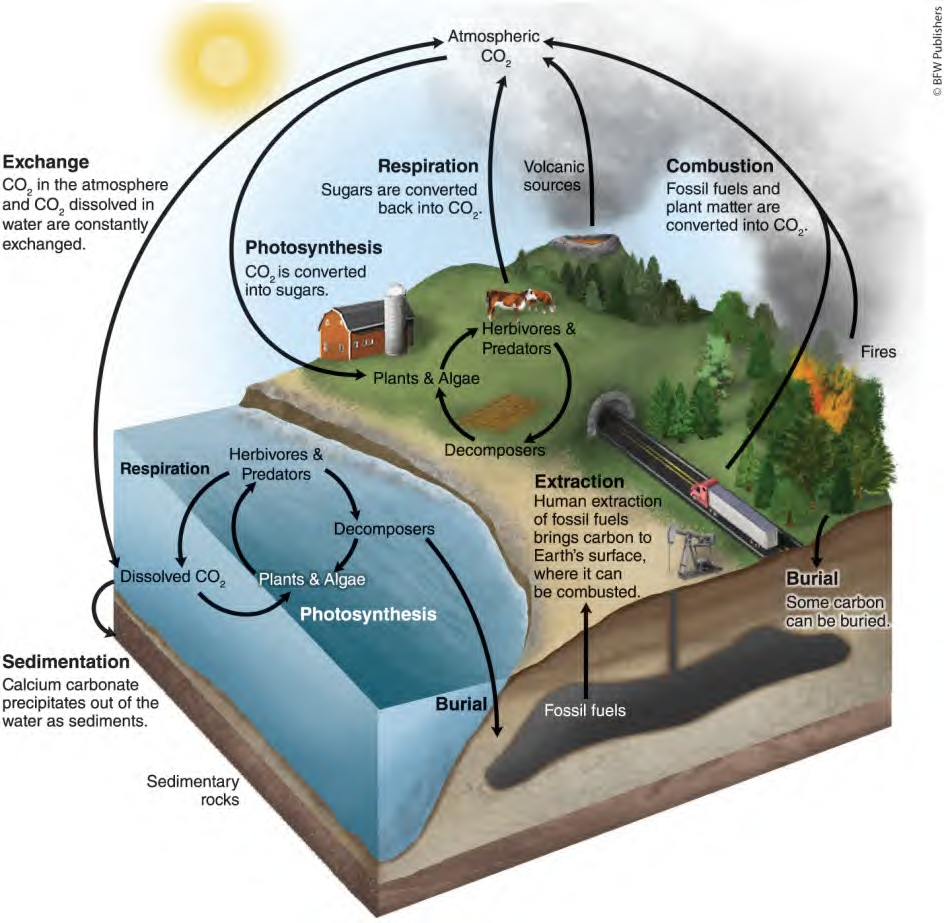
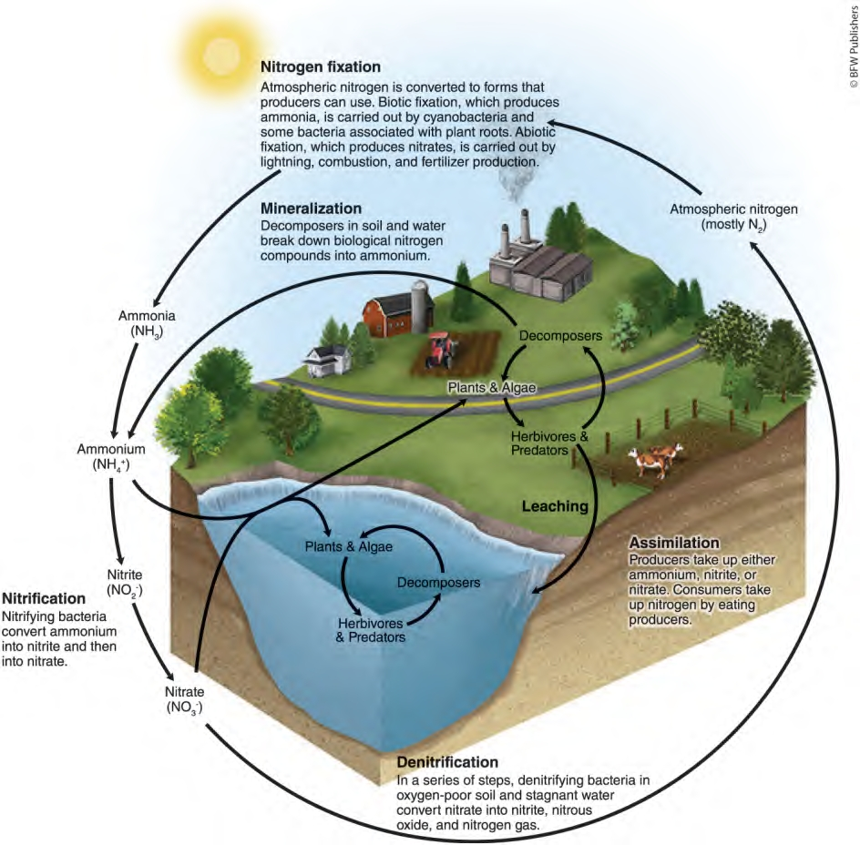
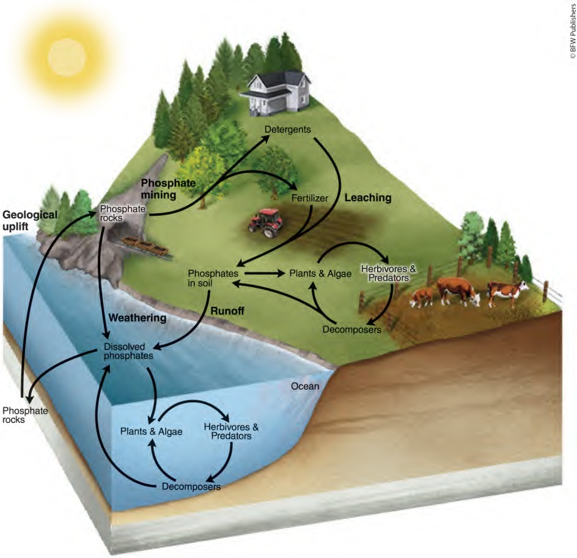
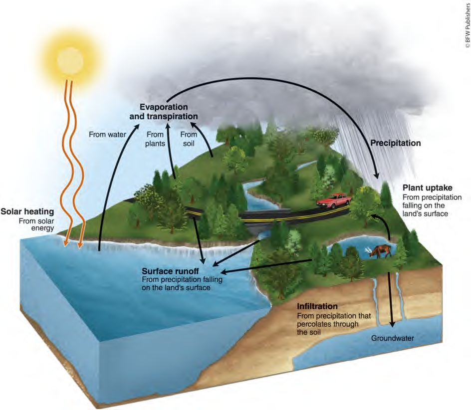
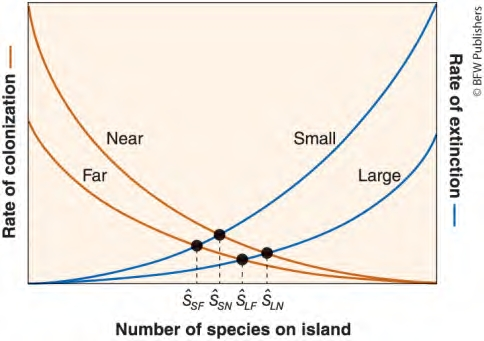
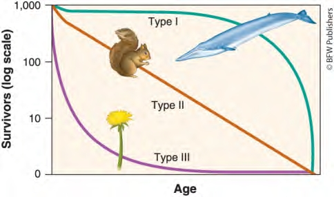

Community ecology - The study of interactions among species
Symbiosis - Two species living in a close and long-term association with one another in an ecosystem
Competition - The struggle of individuals, either within or between species, to obtain a shared limiting resource
Competitive exclusion principle - The principle stating that two species competing for the same limiting resource cannot coexist
Resource partitioning - When two species evolve to divide a resource based on differences in their behavior or morphology
Predation - An interaction in which one animal typically kills and consumes another animal
Parasitoids - A specialized type of predator that lays eggs inside other organisms (the host)
Herbivory - An interaction in which an animal consumes plants or algae
Mutualism - An interaction between two species that increases the chances of survival or reproduction for both species
Photosynthesis - The process by which plants and algae use solar energy to convert carbon dioxide (CO₂) and water (H₂O) into glucose (C₆H₁₂O₆) and oxygen (O₂)
Commensalism - An interaction between two species in which one species benefits and the other species is neither harmed nor helped
Native species - A species that lives in its historical range, typically where it has lived for thousands or millions of years
Exotic species - A species living outside its historical range
Alien species - Alternative term for exotic species
Why it occurs: Resource partitioning occurs because of the competitive exclusion principle. When two species compete for the same limiting resource, natural selection favors individuals that overlap less with the other species in resource use. This reduces competition between the species.
What happens to species: Over many generations, competing species evolve to reduce their overlap in resource use through three main methods:
Temporal partitioning - Using the same resource at different times (e.g., wolves and coyotes hunting at different times of day)
Spatial partitioning - Using different habitats (e.g., desert plants with different root depths)
Morphological partitioning - Evolving different body sizes or shapes (e.g., Galápagos finches with different beak shapes for different foods)
| Type of Interaction | Species 1 | Species 2 |
|---|---|---|
| Competition | - | - |
| Predation | + | - |
| Parasitism | + | - |
| Herbivory | + | - |
| Mutualism | + | + |
| Commensalism | + | 0 |
Biome - Plants and animals found in a particular region of the world
Terrestrial biome - Geographic region categorized by average annual temperature, precipitation, and distinctive plant growth forms
Aquatic biome - Aquatic region characterized by salinity, depth, and water flow
Habitat - Specific area where a particular species lives; subset of a biome
Temperature Categories:
Cold (<5°C): Tundra, Taiga
Temperate (5-20°C): Rainforest, seasonal forest, shrubland, grassland
Tropical (>20°C): Rainforest, savanna, hot desert
1. Tundra - Cold, treeless, 4-month growing season - Permafrost prevents deep roots - Low shrubs, mosses, lichens - Slow decomposition → organic soil accumulation
2. Taiga (Boreal Forest)
- Coniferous evergreens, cold winters - 50-60°N latitude - Poor soils,
short growing season - Major lumber source
3. Temperate Rainforest - Coastal, moderate temps, high precipitation - Giant trees (redwoods 90m tall) - 12-month growing season - Heavily logged
4. Temperate Seasonal Forest - Warm summers, cold winters, >1m precipitation - Deciduous trees (oak, maple, beech) - Fertile soils, high productivity - First converted to agriculture
5. Shrubland (Chaparral) - Hot dry summers, mild wet winters - Fire-adapted drought-resistant shrubs - Mediterranean climates - Ideal for grape cultivation
6. Temperate Grassland - Cold winters, hot dry summers - Rainfall determines grass height - Most fertile soils (98% converted to farms) - Frequent wildfires
7. Tropical Rainforest - Warm, wet, 20°N-20°S of equator - Highest biodiversity, multiple vegetation layers - Rapid decomposition = poor soils despite high productivity - 24,000 ha cleared annually
8. Savanna - Warm temps, distinct wet/dry seasons - Grasslands with scattered deciduous trees - Trees drop leaves in dry season - 99% converted in some regions
9. Hot Desert - ~30°N/S, extremely dry, hot - Water-storing plants with spines - Annual vs perennial plant strategies - Threatened by climate change
Soil Fertility: Grassland > Seasonal forest > Rainforest > Shrubland > Taiga > Tundra > Desert
Growing Season: Tropical (12 months) > Temperate (6-10 months) > Cold (4-6 months)
Decomposition Rate: Tropical > Temperate > Cold
| Biome | Location | General Climate | Soil | Dominant Plants | Animals found in biome |
|---|---|---|---|---|---|
| Tropical rainforest | Near the equator | Hot, wet all year | Poor, thin | Tall trees, vines, epiphytes | Jaguars, monkeys, frogs |
| Desert | Around 30° N & S | Very hot, very dry | Sandy, poor | Cacti, succulents | Camels, lizards, roadrunners |
| Tropical seasonal forest - Savanna | Africa, S. America, Australia | Warm, wet summers, dry winters | Fairly good | Grasses, a few trees | Zebras, lions, cheetahs |
| Woodland-Shrubland | Mediterranean, S. California | Hot dry summers, mild wet winters | Low nutrients | Shrubs, small trees | Quail, coyotes, rabbits |
| Temperate Grassland | Central NA, S. America, Asia | Cold winters, hot summers | Rich, deep | Grasses, wildflowers | Bison, prairie dogs, snakes |
| Northern coniferous forest | Canada, Russia, N. Europe | Cold, some rain | Poor, acidic | Pine, spruce, fir | Bears, moose, wolves |
| Temperate Seasonal Forest | Eastern US, Europe, China | Warm summers, cold winters | Rich | Oak, maple, hickory | Deer, foxes, squirrels |
| Tundra | Arctic, high mountains | Very cold, little rain | Frozen, poor | Moss, lichen, small shrubs | Polar bears, foxes, caribou |
| Temperate Rainforest | Pacific NW, Chile, NZ | Mild, rainy | Low nutrients | Fir, spruce, redwoods | Deer, salamanders, frogs |
Temperature, Rainfall
Tropical Rainforest
Tundra
Because Bananas are a tropical plant and none of the biomes within the US would be very good for growing them. Also importing them from countries with a lower median income can lead to a lower price.
Littoral Zone: Shallow water near shore where plants and algae grow. Most photosynthesis happens here.
Limnetic Zone: Open water where sunlight reaches but rooted plants can’t survive. Only floating algae live here.
Profundal Zone: Deep water with no sunlight. No plants can live here, and oxygen is very low.
Benthic Zone: Muddy bottom of water bodies made of sediments and organic matter.
Oligotrophic Lake: Low-nutrient lake with clear water and few algae.
Mesotrophic Lake: Medium-nutrient lake.
Eutrophic Lake: High-nutrient lake with lots of algae. Water looks green like pea soup.
Coral Bleaching: When stressed corals lose their algae, turn white, and die.
Photic Zone: Upper ocean where sunlight allows photosynthesis.
Aphotic Zone: Deep ocean with no sunlight or photosynthesis.
Chemosynthesis: How bacteria make energy using chemicals instead of sunlight.
Land Biomes:
Water Biomes:
Land Biomes:
Water Biomes:
Main Limiting Factors:
Structure:
Human Threats:
Both land and water biomes:
| Biome | Water Depth (Shallow/Deep) | Salinity (Salty or Not) | Flow/Still | Plants Found | Animals Found | Zones (if any) |
|---|---|---|---|---|---|---|
| Streams/Rivers | Shallow to Deep (varies) | Not salty (freshwater) | Flowing | Algae, mosses, riparian plants | Fish (trout, salmon), insects, amphibians | Headwaters, floodplain, riparian zone |
| Ponds/Lakes | Shallow and Deep zones | Not salty (freshwater) | Still | Algae, cattails, water lilies | Fish, amphibians, zooplankton, insects | Littoral, limnetic, profundal, benthic |
| Freshwater Wetlands | Shallow | Not salty (freshwater) | Still/slow | Grasses, reeds, cattails | Amphibians, insects, birds, fish, mammals | No formal zones |
| Salt Marshes/Estuaries | Shallow | Salty & fresh mix (brackish) | Flowing/tidal | Salt-tolerant grasses, algae | Fish, shellfish, birds, crabs, mammals | Intertidal |
| Mangrove Swamps | Shallow | Salty (coastal) | Tidal flow | Mangrove trees, algae | Fish nurseries, crabs, birds, reptiles | Intertidal |
| Intertidal Zones (coasts) | Shallow (exposed at times) | Salty (marine) | Tidal | Seaweeds, algae | Crabs, mollusks, starfish, shorebirds | High, middle, low tide zones |
| Coral Reefs | Shallow | Salty (marine) | Still/tidal | Coral, algae (zooxanthellae), seagrasses | Fish, mollusks, crustaceans, sea turtles | Photic |
| Open Ocean | Deep | Salty (marine) | Currents | Phytoplankton, kelp (near surface) | Whales, sharks, jellyfish, fish, zooplankton | Photic, aphotic, benthic |
Reservoir - Components of biogeochemical cycles that contain matter (air, water, organisms)
Sink - A reservoir that stores atoms and molecules
Aerobic respiration - Cells convert glucose + oxygen → energy + CO₂ + water
Greenhouse gases - Atmospheric gases that trap heat near Earth’s surface
Global warming - Increased global temperatures due to human greenhouse gas production
Nitrogen fixation - Converts N₂ gas into forms plants can use (NH₃/NO₃⁻)
Nitrification - NH₄⁺ → NO₂⁻ → NO₃⁻ conversion by bacteria
Assimilation - Plants/algae incorporate nitrogen into tissues
Mineralization/Ammonification - Decomposers break down organic matter → NH₄⁺
Denitrification - NO₃⁻ → N₂O → N₂ conversion in oxygen-poor environments
Anaerobic - Lacks oxygen | Aerobic - Has abundant oxygen
Leaching - Dissolved molecules transported through soil via groundwater
Major impacts: - Fossil fuel combustion - Rapidly moves carbon to atmosphere - Deforestation - Releases stored carbon, reduces CO₂ absorption
Result: CO₂ increased from 280 ppm (1800) to 420 ppm today
Largest carbon sink: Sedimentary rocks (limestone/dolomite)
Major impacts: - Synthetic fertilizers - Humans now fix more N than nature - Agricultural runoff - Excess nitrogen leaches into ecosystems - Fossil fuel burning - Creates nitrate deposition
Consequences: Reduced species diversity, altered plant communities, acid precipitation
Largest nitrogen sink: Earth’s atmosphere (78% N₂ gas)
Carbon Cycle: 7 processes - Fast: photosynthesis, respiration, exchange, combustion - Slow: sedimentation, burial, extraction
Nitrogen Cycle: 5 transformations 1. Fixation (N₂ → NH₃/NO₃⁻) 2. Nitrification (NH₄⁺ → NO₃⁻) 3. Assimilation (plant uptake) 4. Mineralization (organic N → NH₄⁺) 5. Denitrification (NO₃⁻ → N₂)


Algal bloom: A rapid increase in algal population in waterways caused by excess nutrients (especially phosphorus) that increases algae biomass.
Hypoxic: Low oxygen conditions in water, often resulting from algae decomposition consuming dissolved oxygen.
Dead zone: Water areas where oxygen levels become so low that fish and aquatic animals die, typically caused by algal blooms and decomposition.
Transpiration: Water release from plant leaves into the atmosphere during photosynthesis.
Evapotranspiration: Combined water loss through evaporation and transpiration from ecosystems.
Runoff: Water flowing across land surfaces into streams and rivers toward the ocean.


Autotrophs (Producers): Plants, algae, and bacteria that use solar energy to produce sugars through photosynthesis.
Cellular Respiration: Process by which cells convert glucose and oxygen into energy, CO₂, and water.
Anaerobic Respiration: Converting glucose into energy without oxygen (less efficient than aerobic respiration).
Primary Productivity: Rate of converting solar energy into organic compounds over time.
Gross Primary Productivity (GPP): Total solar energy captured by producers via photosynthesis.
Net Primary Productivity (NPP): Energy captured by producers minus energy used for respiration.
Biomass: Total mass of all living matter in a specific area.
Standing Crop: Amount of biomass present at a particular time.
NPP = GPP - R - NPP = Net Primary Productivity - GPP
= Gross Primary Productivity
- R = Respiration by producers
Math Problem: Tropical rainforest has NPP = 8,500 kcal/m²/year and GPP = 21,000 kcal/m²/year. Find R.
NPP = GPP - R 8,500 = 21,000 - R R = 12,500 kcal/m²/year
Terrestrial Plants (Green): Use chlorophyll which absorbs red and blue light but reflects green light. All wavelengths available on land.
Deeper Water Plants (Red Algae): Water absorbs red light in upper 1m but blue light penetrates to 100m. Red algae evolved additional pigments to capture available blue light at depth.
Heterotroph (Consumer): Organism that must obtain energy by consuming other organisms.
Primary Consumer (Herbivore): Consumer that eats producers. Examples: zebras, grasshoppers.
Carnivore: Consumer that eats other consumers.
Secondary Consumer: Carnivore that eats primary consumers. Examples: lions, hawks.
Tertiary Consumer: Carnivore that eats secondary consumers. Examples: bald eagles.
Trophic Levels: Successive levels of organisms consuming one another.
Food Chain: Linear sequence of consumption from producers through consumers.
Scavengers: Organisms that consume dead animals (vultures).
Detritivores: Organisms that break down dead tissues into smaller particles (dung beetles).
Decomposers: Fungi and bacteria that convert organic matter into recyclable elements.
The 10% Rule: Only about 10% of energy transfers from one trophic level to the next.
Trophic Pyramid: Representation of energy/biomass distribution among trophic levels.
Food Web: Model showing energy flow through interconnected food chains.
Given: Primary producers have 8,700 J
Answer: Secondary consumers would have 87 Joules.
• Biodiversity: Variety of life at multiple scales; indicator of environmental health
• Genetic Diversity: Genetic variation among individuals in a population; helps species adapt to changes
• Species Diversity: Number of species in a region or ecosystem
• Habitat Diversity: Variety of habitats in an ecosystem; supports different species types
• Specialists: Species with narrow habitat requirements (koalas only eat eucalyptus)
• Generalists: Species that survive in wide range of conditions (white-tailed deer)
• Ecosystem Diversity: Variety of ecosystems in a region
• Species Richness: Number of different species in an area
• Species Evenness: Whether species have similar population sizes or one dominates
• Enhanced stability during environmental changes • Faster recovery from disturbances • Higher primary productivity • Multiple species can fill similar roles if one is lost
• More vulnerable to disruptions • Slower recovery from disturbances • Higher risk of collapse when key species are lost
• Provides long-term population survival through adaptation • Enables disease resistance • Critical for agriculture - genetic variety helps combat new diseases • Loss affects species for thousands of years (cheetah example)
• Creates stable ecological networks • Provides species redundancy for ecosystem functions • Increases productivity through species interactions • Example: diverse soil fungi improve plant growth
• Supports both specialist and generalist species • Allows many species to coexist in different niches • Provides refugia during environmental changes • Loss affects specialists more than generalists initially
Ecosystem services: The processes by which life-supporting resources such as clean water, timber, fisheries, and agricultural crops are produced.
Provisions: Goods produced by ecosystems that humans can use directly (examples: lumber, food crops, medicinal plants, natural rubber).
Provisioning Services - Timber for construction and paper - Maple syrup from sugar maples - Wild berries, nuts, and mushrooms - Medicinal plants like ginseng
Regulating Services - Carbon storage to mitigate climate change - Water cycle regulation through transpiration - Air purification by filtering pollutants - Soil erosion prevention
Supporting Services - Nutrient cycling through leaf decomposition - Wildlife habitat provision - Soil formation from organic matter - Pollination by forest insects
Cultural Services - Recreational hiking and camping - Aesthetic beauty for photography - Educational value for ecology studies - Spiritual benefits from nature connection
Provisioning Services - Commercial fishing (salmon, crabs, oysters) - Salt production through evaporation - Seaweed harvesting - Shellfish aquaculture
Regulating Services - Storm surge protection for coasts - Water filtration before reaching ocean - Carbon sequestration in salt marshes - Flood control during high tides
Supporting Services - Nursery habitat for juvenile marine species - Nutrient cycling between fresh and saltwater - Primary productivity from marsh grasses - Migration sites for waterfowl
Cultural Services - Birdwatching and wildlife observation - Recreational boating and fishing - Marine biology research sites - Cultural significance for indigenous communities
Island biogeography: The study of how species are distributed and interacting on islands.
Species-area curve: How the number of species on an island increases with island area.
Two main factors determine species number:
Flightless ground-nesting birds are most vulnerable because they: - Cannot escape predators - Build accessible nests - Lack predator defenses - Have specialized diets
Small, far islands because they: - Support small populations (extinction-prone) - Receive few replacement colonists - Have limited habitat diversity - Cannot support complex food webs

Ecological Tolerance (Fundamental Niche): The range of abiotic conditions where a species can survive, grow, and reproduce.
Realized Niche: The actual conditions where a species lives after biotic interactions (competition, predation, disease) further limit its distribution.
Geographic Range: Areas of the world where a species actually lives.
Mass Extinction: Large numbers of species going extinct over short time periods due to major environmental changes.
Five historical mass extinctions occurred when environmental changes exceeded species’ tolerance limits: - 251 million years ago: 90% marine species extinct from unknown environmental changes - 65 million years ago: Meteorite impact blocked sunlight, halting photosynthesis
Human activities push species beyond tolerance through: - Rapid climate change: Faster than species can adapt or migrate - Habitat destruction: Eliminates suitable environments - New stressors: Invasive species, pollution, disease
Species go extinct when: 1. No suitable habitat remains within tolerance range 2. Physical barriers prevent migration 3. Better competitors occupy new habitats 4. Changes occur too rapidly for adaptation
Periodic disruptions - Regular, predictable disruptions like day/night cycles or tidal cycles.
Episodic disruptions - Somewhat regular disruptions like rain/drought cycles every 5-10 years.
Random disruptions - Unpredictable disruptions like volcanic eruptions or hurricanes.
Resistance - How much a disruption can affect ecosystem energy and matter flows. High resistance means the ecosystem maintains function despite disturbance.
Resilience - The rate an ecosystem returns to its original state after disruption. High resilience means quick recovery.
Intermediate disturbance hypothesis - Ecosystems with intermediate disturbance levels have higher species diversity than those with very high or low disturbance.
The hypothesis works because: - Low disturbance: Competitive species dominate and outcompete others - High disturbance: Only fast-reproducing, hardy species survive - Intermediate disturbance: Balance allows both competitive and resilient species to coexist
Example: New England marine algae with periwinkle snails. Few snails = competitive algae dominate. Many snails = only unpalatable algae survive. Intermediate snail density = 12 algae species coexist.
Causes: Ice ages trap water in ice sheets (lowering levels), warming periods melt ice (raising levels). Driven by Earth’s orbital changes.
Impacts: During last Ice Age, levels dropped 120+ meters. After warming, rose 85+ meters. Coastal areas repeatedly switched between land and marine ecosystems.
Why: Animals follow seasonal food availability and suitable habitats.
Example: Serengeti migration - millions of wildebeest, zebras, and gazelles migrate in circular patterns following seasonal rains. They move to areas where rains create fresh vegetation, returning when original areas recover.
Evolution - A change in the genetic composition of a population over time.
Microevolution - Evolution at the population level (e.g., different varieties of apples).
Macroevolution - Evolution that gives rise to new species, genera, families, classes, or phyla.
Artificial selection - Humans determine which individuals breed based on desired traits.
Natural selection - The environment determines which individuals survive and reproduce.
Fitness - An individual’s ability to survive and reproduce.
Adaptation - A trait that improves an individual’s fitness.
Allopatric speciation - Speciation that occurs with geographic isolation.
Sympatric speciation - Evolution of one species into two without geographic isolation.
Natural Selection Requirements: - Individuals produce excess offspring - Not all offspring survive - Individuals differ in traits - Traits can be passed to offspring - Trait differences affect survival/reproduction
Random Processes: - Gene flow - Individuals move between populations, altering genetic composition - Genetic drift - Random mating changes genetic composition (more likely in small populations) - Bottleneck effect - Population reduction decreases genetic variation - Founder effect - Small colonizing group creates genetically distinct population
Slow evolution: Cichlid fish evolved ~200 species over millions of years in Lake Tanganyika
Rapid evolution: Atlantic cod evolved smaller size and earlier maturity after decades of fishing pressure targeting large individuals
Very rapid evolution: Genetically modified organisms (GMOs) can gain new traits instantly through gene insertion
Ecological succession - Predictable species replacement over time.
Primary succession - Begins with bare rock, no soil. Secondary succession - Begins with soil intact.
Pioneer species - Survive with little/no soil. Keystone species - Low abundance, large community effects.
Indicator species - Demonstrate ecosystem characteristics.
Primary: Pioneer species (lichens, mosses) → soil formation → grasses → trees
Secondary: Disturbance leaves soil → rapid recolonization → early trees → shade-tolerant trees
Species richness: Increases then plateaus
Biomass: Increases and plateaus
Productivity: Increases then declines (mature forests =
low productivity, high standing crop)
Keystone: Beavers (create ponds), sea stars (control mussels), flying foxes (pollinate plants)
Indicator: Mayflies (clean water), E. coli (sewage contamination), lichens (air quality)
Population growth rate (intrinsic growth rate): Number of offspring produced minus deaths in a given time period.
Biotic potential: Maximum population growth under ideal conditions with unlimited resources.
K-selected species: Species with low growth rates that increase slowly to carrying capacity.
Carrying capacity: Maximum number of individuals an environment can support (denoted as K).
Overshoot: Population exceeding carrying capacity.
Dieback: Rapid population decline due to death.
Generalists: Live under wide range of conditions, broad diets, adaptable to change (gray kangaroos)
Specialists: Narrow conditions/diets, vulnerable to environmental change (koalas eating only eucalyptus)
r-selected species because they reproduce rapidly, produce many offspring, and can quickly exploit new environments.
Type I: High survival until old age (K-selected: elephants, humans)
Type II: Constant death rate throughout life (chipmunks, squirrels)
Type III: High early death, survivors live long (r-selected: fish, frogs)

Trapping data show cyclical oscillations: hare populations peak first, followed by lynx 1–2 years later. As hares overconsume vegetation, their numbers crash, causing lynx to decline from lack of prey. Reduced predation then allows hares to rebound—repeating the cycle.
When resources like food or nesting sites decline:
Example: Logging reduces nesting cavities for goldeneye ducks, lowering their population even if food is plentiful.
Population size = (Immigrations + births) - (emigrations + deaths)
%Change = New - Original / Original x 100%
Immigration: The movement of people into a country or region from another country or region.
Emigration: The movement of people out of a country or region.
Crude Birth Rate (CBR): The number of births per 1,000 individuals per year.
Crude Death Rate (CDR): The number of deaths per 1,000 individuals per year.
Age Structure Diagram: A visual representation of the number of individuals within specific age groups for a country, typically expressed separately for males and females, with each horizontal bar representing a 5-year age group.
Total Fertility Rate (TFR): An estimate of the average number of children that each woman in a population will bear throughout her childbearing years (typically ages 15-49).
Replacement-Level Fertility: The total fertility rate required to offset the average number of deaths in a population in order to maintain the current population size, assuming there is no net migration.
Global Population Growth Rate:
Global population growth rate (%) = [CBR - CDR] / 10
Where: - CBR = Crude birth rate (births per 1,000 people per year) - CDR = Crude death rate (deaths per 1,000 people per year) - Divided by 10 to convert from per 1,000 to percentage
National Population Percent Growth Rate:
National population % growth rate = [(CBR + immigration) - (CDR + emigration)] / 10
Where: - CBR = Crude birth rate (births per 1,000 people per year) - Immigration = number of people moving into the country (per 1,000 people per year) - CDR = Crude death rate (deaths per 1,000 people per year) - Emigration = number of people moving out of the country (per 1,000 people per year) - Divided by 10 to convert from per 1,000 to percentage
TFR is typically lower in developed countries for several reasons. Women tend to delay having their first child due to pursuing education and employment opportunities, which reduces their childbearing years. Higher income levels correlate inversely with TFR. Additionally, developed countries provide better access to family planning services and birth control information, allowing women greater control over reproduction.
Declining population: TFR below replacement level
No growth (stable) population: TFR at replacement level
Growing population: TFR above replacement level
Calculation of replacement-level fertility for a no-growth country:
In developed countries, replacement-level fertility is typically about two children per woman plus a small amount extra. This calculation is based on:
In developing countries, replacement-level fertility is higher because infant and child mortality rates are higher, meaning more births are needed to ensure enough individuals survive to reproductive age to maintain the population.
The key assumption is that there is no net migration (immigration equals emigration). If net migration is positive, a country can maintain or grow its population even with a TFR below replacement level.
Doubling time: The number of years it takes a population to double in size.
Rule of 70: A method to determine doubling time by dividing 70 by the percentage population growth rate. - Formula: Doubling time (years) = 70 / growth rate (%)
Theory of demographic transition: A theory stating that countries move from high to lower birth and death rates as they transition from preindustrial to industrialized economic systems.
Characteristics: - Preindustrial period with high infant mortality - Large families provide economic benefits (labor) - Poor sanitation and lack of healthcare
CBR and CDR: Both HIGH and EQUAL (no growth)
Characteristics: - Modernization begins with better sanitation and healthcare - Death rates drop but families still have many children - Population momentum occurs
CBR and CDR: CBR HIGH, CDR DROPS (rapid growth)
Characteristics: - Improved economy and education - Increased affluence and birth control access - Smaller families become preferred
CBR and CDR: Both DECREASE toward equality (slowing growth)
Characteristics: - High affluence and development - Aging population with fewer workers - Increased elderly care costs
CBR and CDR: CBR BELOW CDR (both LOW, population declines)
Plate tectonics: The theory that the lithosphere of Earth is divided into plates, most of which are in constant motion.
Earthquake: A sudden movement of Earth’s crust caused by a release of potential energy from the movement of tectonic plates.
Hot spots: Places where molten material from Earth’s mantle reaches the lithosphere.
Volcano: A vent in the surface of Earth that emits ash, gases, or molten lava.
Tsunami: A series of waves in the ocean caused by seismic activity or an undersea volcano that causes a massive displacement of water.
Divergent boundary: An area below the ocean where tectonic plates move away from each other.
Seafloor spreading: Rising magma forms new oceanic crust on the seafloor at divergent boundaries.
Convergent boundary: An area where one plate moves toward another plate and collides.
Subduction: The process in which the edge of an oceanic plate moves downward beneath the continental plate.
Island arcs: A chain of islands formed by volcanoes as a result of two tectonic plates coming together and experiencing subduction.
Transform boundary: An area where tectonic plates move sideways past each other.
Fault: A fracture in rock caused by a movement of Earth’s crust.
Plate tectonics impacts biodiversity through continental movement, which changes climates and creates or removes geographic barriers.
Example: Australia and Antarctica split apart and moved to different climatic regions. This separation led to allopatric speciation, where isolated species evolved along different paths. Species had to adapt to new climates or face extinction, with some evolving into entirely new species due to geographic isolation.
Physical weathering: The mechanical breakdown of rocks and minerals.
Chemical weathering: The breakdown of rocks and minerals by chemical reactions or dissolving of chemical elements from rocks.
Acid rain (acid precipitation): Precipitation high in sulfuric acid and nitric acid.
Erosion: The physical removal of rock fragments from a landscape or ecosystem.
Porosity: The size of the air spaces between particles.
Water holding capacity: The amount of water a soil can hold against the draining force of gravity.
Permeability: The ability of water to move through the soil.
┌─────────────────────────────────────────────────────────┐
│ O HORIZON (Organic Layer) │
│ Organic detritus in various stages of decomposition. │
│ Humus (fully decomposed matter) in lowest section. │
├─────────────────────────────────────────────────────────┤
│ A HORIZON (Topsoil) │
│ Organic material (including humus) mixed with minerals. │
├─────────────────────────────────────────────────────────┤
│ E HORIZON (Zone of Leaching) │
│ Iron, aluminum, and dissolved acids removed. Found in │
│ some acidic soils. Not present in all soils. │
├─────────────────────────────────────────────────────────┤
│ B HORIZON (Subsoil) │
│ Primarily mineral material with very little organic │
│ matter. Nutrients accumulate here. │
├─────────────────────────────────────────────────────────┤
│ C HORIZON (Parent Material Layer) │
│ Least-weathered horizon, similar to parent material. │
└─────────────────────────────────────────────────────────┘Note: Most soils have either an O or A horizon, usually not both.
Sandy Loam ranges: - Sand: approximately 50-70% - Silt: approximately 15-30% - Clay: approximately 0-20%
Sandy loam is dominated by sand with moderate silt and low clay content, creating well-draining soil that retains some moisture and nutrients.
Albedo: Percentage of incoming sunlight reflected from a surface. Snow/ice (80-95%) vs. forests (10-20%).
Saturation Point: Maximum water vapor air can hold at a given temperature. When temperature drops, water condenses → precipitation.
Hadley Cells: Convection currents between equator and 30°N/30°S. Warm air rises at equator → precipitation. Cool, dry air sinks at 30° → deserts.
Intertropical Convergence Zone (ITCZ): Latitude with most intense sunlight where Hadley cells converge. Shifts 23.5°N to 23.5°S yearly, creating tropical wet/dry seasons.
Polar Cells: Air rises at 60°N/60°S (precipitation), sinks at poles (90°N/90°S), returns to 60°.
Ferrell Cells: Convection currents between 30° and 60° latitudes. Driven by Hadley and polar cells. Creates variable mid-latitude winds.
Coriolis Effect: Deflection of moving objects due to Earth’s rotation. Creates prevailing wind patterns by deflecting air currents east or west.
EXOSPHERE (600-10,000 km) | 0-1,700°C | Satellites orbit here
THERMOSPHERE (85-600 km) | up to 2,000°C | Blocks X-rays/UV | Auroras
MESOSPHERE (50-85 km) | 0 to -90°C | Meteors burn up here
STRATOSPHERE (16-50 km) | -60 to 0°C | OZONE LAYER (O₃)
| Absorbs UV-B and UV-C
TROPOSPHERE (0-16 km) | -52°C to warmest | DENSEST layer
| Weather occurs here
═══════════════════════════════════════════════════════════
EARTH'S SURFACE2A[AGas Composition: Nitrogen (78%) + Oxygen (21%) + Other gases (1%) - Greenhouse gases (CO₂, CH₄, N₂O) = small amount but warm Earth by 33°C - Density and pressure decrease with altitude
NORTH POLE (90°N)
↓ sinking
POLAR CELL → Polar Easterlies
↓
60°N ← rising
↓
FERRELL CELL → Westerlies
↓
30°N ← sinking
↓
HADLEY CELL → NE Trade Winds
↓
EQUATOR ← rising (ITCZ)
═══════════════════════════════════════
EQUATOR ← rising (ITCZ)
↑
HADLEY CELL → SE Trade Winds
↑
30°S ← sinking
↑
FERRELL CELL → Westerlies
↑
60°S ← rising
↑
POLAR CELL → Polar Easterlies
↑ sinking
SOUTH POLE (90°S)Earth rotates once every 24 hours → day/night cycle
Cause: Earth’s axis tilted 23.5° + orbit around Sun - Hemisphere tilted toward Sun = summer (direct rays, long days) - Hemisphere tilted away = winter (oblique rays, short days)
June Solstice (Jun 20-21)
N. Hemisphere Summer
☀️
|
Sept Equinox ------🌍------ March Equinox
(Sep 22-23) (orbit) (Mar 20-21)
|
December Solstice (Dec 21-22)
S. Hemisphere SummerSolar radiation → convection currents → Coriolis effect → prevailing winds → climate patterns → biome locations
Earth’s tilt creates seasons and shifts the ITCZ, determining where and when precipitation falls globally.
Watershed: All the land in an area that drains into a particular stream, river, lake, or wetland.
Description: The total land surface that drains water into the watershed’s outlet (can range from a few hectares to thousands).
Effect on Water Amount: 1. Larger areas collect more total precipitation 2. More water is channeled to the outlet 3. Example: Mississippi River drains nearly one-third of the U.S.
Description: Distance along the main water flow from beginning to outlet.
Effect on Water Amount: 1. Greater length increases travel time to outlet 2. Affects timing and concentration of water flow 3. Works with area to determine total water volume
Description: The steepness of land within the watershed.
Effect on Water Amount: 1. Gentle slopes: water moves slowly, more infiltration, less runoff, minimal erosion 2. Steep slopes: water moves fast, less infiltration, more runoff, substantial erosion and sediment
Description: Composition of soil particles (sand, silt, clay).
Effect on Water Amount: 1. Sandy soils: highly permeable, water infiltrates rapidly, less surface runoff 2. Clay soils: less permeable, more surface runoff, carries sediment easily
Description: Plants and root systems present in the watershed.
Effect on Water Amount: 1. With vegetation: roots hold soil, increase infiltration, reduce runoff, absorb nutrients 2. Without vegetation: increased erosion, more runoff, more sediment loss
Gyre: A large-scale pattern of water circulation that moves clockwise in the Northern Hemisphere and counterclockwise in the Southern Hemisphere.
Upwelling: The upward movement of ocean water toward the surface as a result of diverging currents.
Thermohaline circulation: An oceanic circulation pattern that drives the mixing of surface water and deep water.
Rain shadow: A region with dry conditions found on the leeward side of a mountain range as a result of humid winds from the ocean causing precipitation on the windward side.
El Niño–Southern Oscillation (ENSO): A reversal of wind and water currents in the South Pacific.
La Niña: Following an El Niño event, trade winds in the South Pacific reverse strongly, causing regions that were hot and dry to become cooler and wetter.
Direction: - Northern Hemisphere: Clockwise rotation - Southern Hemisphere: Counterclockwise rotation
Climate Effects: - Cold currents along west coasts → cooler temperatures (California Current) - Warm currents along east coasts → warmer temperatures (Gulf Stream)
Where: Along west coasts of continents
Process: Surface currents diverge → deeper water rises to replace it
Importance: - Brings nutrients from ocean bottom - Supports large phytoplankton populations → large fish populations - Critical for commercial fisheries
Process: 1. Gulf Stream carries warm water to cold North Atlantic 2. Evaporation and freezing leave salt behind → cold, salty water 3. Dense water sinks to ocean bottom 4. Deep current moves past Antarctica → northern Pacific 5. Water rises and returns to Gulf of Mexico (takes hundreds of years)
Climate Impact: England is 20°C (36°F) warmer in winter than Newfoundland (similar latitude) due to Gulf Stream
Climate Change Concern: Glacier melting → less salty North Atlantic → water won’t sink → could shut down circulation → much colder western Europe
Windward side (facing wind): - Humid ocean air rises up mountain - Adiabatic cooling → condensation - Heavy precipitation falls - Lush vegetation
Leeward side (away from wind): - Dry air descends mountain - Adiabatic heating - Warm, dry conditions → desert
Frequency: Every 3 to 7 years
What Happens: 1. Trade winds weaken or reverse 2. Warm water moves eastward toward South America 3. Suppresses upwelling off Peru coast 4. Lasts weeks to years
Global Impacts: - Reduced upwelling → fish populations crash - Southeastern U.S.: Cooler and wetter - Northern U.S., Canada, southern Africa, Southeast Asia: Unusually dry - Crop failures and food shortages - 2015-2016 ENSO: ~100 million people faced food shortages
Timing: Follows El Niño event
What Happens: Trade winds reverse back stronger than normal
Effects: Opposite of El Niño - hot/dry regions become cool/wet
Cycle: After La Niña, climate returns to normal for several years
Effect of soil compactness on the total gross growth of Brassica rapaTragedy of the commons: The tendency of a shared, limited resource to become depleted if it is not regulated in some way.
Externality: The cost or benefit of a good or service that is not included in the purchase price of that good or service, or otherwise accounted for.
Clear-cutting: A method of harvesting trees that involves removing all or almost all of the trees within an area.
Selective cutting: The method of harvesting trees that involves the removal of single trees or a relatively small number of trees from the larger forest.
Ecologically sustainable forestry: An approach to removing trees from forests in ways that do not unduly affect the viability of other noncommercial tree species.
Tree plantations: A large area typically planted with a single fast-growing tree species.
Endangered Species Act: A 1973 U.S. law designed to protect plant and animal species that are threatened with extinction, and the habitats that support those species.
Imagine a communal pasture where many farmers graze their sheep. Each individual farmer benefits from raising as many sheep as possible, so they are tempted to add more sheep to the pasture. However, when the total number of sheep exceeds the carrying capacity of the land, the sheep overgraze the pasture so plants cannot recover. The common land becomes degraded through loss of vegetation and soil erosion, and the sheep no longer have adequate nourishment. Eventually, the entire community suffers because farmers made decisions based only on short-term gain without considering the common good.
Why it happens: People act from self-interest for short-term gain without agreement or regulation on resource use.
Outcome: The shared resource becomes depleted and degraded, harming everyone in the long run.
Global fisheries are treated as commons, with fish being harvested from international waters without proper regulation. This has led to overexploitation and rapid decline of many commercially harvested fish species and has upset the balance of entire marine ecosystems.
Why it happens: No single entity owns or regulates these waters, so individual fishing operations maximize their catch without considering the sustainability of the fish populations.
Outcome: Fish populations decline dramatically, ecosystems are disrupted, and future fishing becomes less viable for everyone.
Clear-cutting has multiple negative environmental impacts:
Erosion: Especially on slopes, clear-cutting increases wind and water erosion, causing loss of soil and nutrients. This adds silt and sediment to nearby streams, harming aquatic populations by clogging fish gills.
Mudslides: Denuded slopes become prone to dangerous mudslides.
Soil compaction: Heavy machinery leads to soil compaction, reducing water infiltration during rain events, causing more erosion and increased flooding.
Carbon dioxide release: Increased sunlight and heat reaching the soil leads to increased microbial decomposition, releasing more CO₂ from the soil and contributing to climate change.
Water temperature increase: More sunlight reaches rivers and streams, raising water temperatures. Since colder water holds more dissolved oxygen, this results in lower oxygen concentrations that can harm aquatic species.
Biodiversity loss: Clear-cutting causes habitat alteration and destruction, breaking up large forests into smaller fragments, which decreases biodiversity.
Soil degradation: Fire or herbicides used to remove vegetation before replanting reduce soil organic matter and may contaminate water runoff.
Note: In heavily forested regions (like northern New England), clear-cutting can actually increase habitat diversity because it creates open areas in otherwise densely forested landscapes.
Environmental Positives: - Can increase habitat diversity in heavily forested regions - Can create suitable habitat for certain desired bird and mammal species - Ideal for fast-growing tree species with high sunlight requirements
Environmental Negatives: - Facilitates erosion - Reduces biodiversity - Increased sunlight raises temperature of soils and nearby rivers/streams - Releases carbon dioxide and contributes to climate change
Economic Positives: - Less expensive - Easiest method
Economic Negatives: - May reduce long-term timber value if soil becomes depleted
Environmental Positives: - Ideal for shade-tolerant tree species - Less extensive environmental impacts - Maintains forest structure with trees of varying ages
Environmental Negatives: - Still requires logging roads that fragment habitat and compact soil - May select against desirable individuals or species (removing the best trees) - Repeated selective cutting over generations may leave less desirable trees
Economic Positives: - Maintains forest productivity over time
Economic Negatives: - More expensive - More difficult to implement
Environmental Positives: - Maintains forest in as natural a state as possible - Often done without using fossil fuels - Protects both plants and animals
Environmental Negatives: - Still involves some habitat disruption
Economic Positives: - Provides long-term forest health
Economic Negatives: - Costly - More difficult - Yields less timber - Hard to compete economically with mechanized logging
Question 1: Convert to hectares and express in scientific notation for each.
Total forest in tropics of Central and South America: - 8,750,000 km² × (100 ha/1 km²) = 875,000,000 ha - Scientific notation: 8.75 × 10⁸ ha
Protected areas: - 3,500,000 km² × (100 ha/1 km²) = 350,000,000 ha - Scientific notation: 3.50 × 10⁸ ha
Question 2: Identify the percent of forest in protected areas.
Percent protected = (3.50 × 10⁸ ha) ÷ (8.75 × 10⁸ ha) = 0.40 × 100% = 40%
Answer: Approximately 40% of the forest in the tropics of Central and South America is in protected areas.
Agribusiness (Industrial Agriculture): Agriculture that applies mechanization and standardization to food production. Large-scale operations with extensive machinery and fossil fuel use.
Green Revolution (Third Agricultural Revolution): A shift in twentieth-century agricultural practices including mechanization, fertilization, irrigation, and improved crop varieties that dramatically increased food output.
Organic Fertilizer: Fertilizer composed of organic matter from plants and animals, typically animal manure and decomposed crop residues.
Synthetic Fertilizer (Inorganic Fertilizer): Commercially produced fertilizer using fossil fuels. Highly concentrated and produced by combusting natural gas to fix atmospheric nitrogen.
Waterlogging: Soil degradation from prolonged water saturation that impairs root growth by preventing oxygen access.
Salinization: Soil degradation when salts in irrigation water concentrate on soil surface through evaporation, reaching toxic levels that impede plant growth.
Pesticides: Natural or synthetic substances that kill or control pest organisms. The U.S. applies ~454 million kg annually, 90% for agriculture.
Insecticide: A pesticide targeting insects and other invertebrates that consume crops.
Herbicide: A pesticide targeting plant species (weeds) that compete with crops.
Monocropping: Large plantings of a single crop species or variety, often 405+ hectares in the U.S.
Energy Subsidy: The fossil fuel and human energy input per calorie of food produced beyond solar energy. Example: 5 calories input for 1 calorie of food = energy subsidy of 5.
Economic Pros: Reduces labor costs; economies of scale benefit large farms; faster planting and harvesting.
Economic Cons: High costs ($150,000+) make machinery unaffordable for small farms, creating competitive disadvantages and farm consolidation.
Environmental Pros: Increases production efficiency.
Environmental Cons: Heavy fossil fuel reliance (17% of U.S. commercial energy goes to food system); encourages monocropping, causing soil erosion and biodiversity loss.
Economic Pros: Reduces pesticide costs; increases yields and revenues; creates drought/salt-tolerant varieties. By 2020: 94% of U.S. corn, 96% of soybeans were GMO.
Economic Cons: Higher seed costs; creates dependency on seed companies; may limit market access.
Environmental Pros: Can reduce pesticide use; allows farming in harsh conditions; nutrient-enhanced crops (golden rice).
Environmental Cons: Risk of genes spreading to wild relatives; reduces genetic diversity; may eliminate beneficial traits; encourages monocropping.
Economic Pros: Maintains soil productivity; dramatically increases yields; synthetic fertilizers are concentrated and efficient.
Economic Cons: Significant investment required; vulnerable to fossil fuel price fluctuations.
Environmental Pros: Organic fertilizers improve soil structure and release nutrients slowly, reducing runoff.
Environmental Cons: Synthetic fertilizers require fossil fuels; causes nutrient runoff into waterways (Central Valley, Mississippi watershed); contributes to water pollution and eutrophication.
Economic Pros: Enables crop growth in arid regions (California’s Imperial Valley); 16% of irrigated land produces 40% of world’s food; increases yield reliability.
Economic Cons: Requires infrastructure and pumping costs; soil degradation reduces land value.
Environmental Pros: More efficient water use; targeted water delivery.
Environmental Cons: Depletes groundwater and aquifers; causes saltwater intrusion; leads to waterlogging and salinization; diverts water from natural ecosystems.
Economic Pros: Protects crops and maintains yields; reduces losses; enables consistent harvests.
Economic Cons: Ongoing expense; repeated applications needed; pest resistance requires more expensive chemicals.
Environmental Pros: Selective pesticides can target specific pests with minimal harm to others.
Environmental Cons: Harms beneficial organisms (pollinators, predators); contaminates waterways; health risks for farm workers; broad-spectrum types kill indiscriminately; reduces biodiversity.
Definition: The mechanical process of turning over and breaking up soil using tools or machinery to prepare land for planting crops.
Why It’s Done: - Prepares soil for planting by creating a suitable seedbed - Helps incorporate crop residues and organic matter into the soil - Controls weeds by burying them - Aerates compacted soil - Facilitates water infiltration
Environmental Effects:
Negative: - Soil Erosion: Exposes bare soil to wind and water erosion, leading to loss of topsoil (as noted in the text, certain U.S. farmland loses an average of 1 metric ton of topsoil per hectare per year to wind erosion) - Loss of Soil Structure: Breaks down soil aggregates and disrupts soil biology - Carbon Release: Releases stored carbon from soil into the atmosphere as CO₂, contributing to climate change - Habitat Destruction: Disrupts soil ecosystems and organisms
Positive: - Can improve short-term soil aeration and drainage - Helps mix nutrients throughout the soil profile
Economic Effects:
Positive: - Increases short-term crop yields by creating optimal planting conditions - Reduces initial weed competition
Negative: - Requires expensive equipment and fuel (tractors, plows) - Long-term soil degradation can reduce productivity and require more inputs - Increased erosion leads to loss of valuable topsoil
Definition: A traditional farming method where vegetation is cut down and burned to clear land for cultivation. After a few years of farming, the land is abandoned and allowed to regenerate while farmers move to a new plot.
Why It’s Done: - Clears land quickly for planting in forested areas - Burning releases nutrients from vegetation into the soil as ash - Provides temporary fertilization for crops - Traditional method used by subsistence farmers, especially in tropical regions - Works well when population density is low and fallow periods are long enough
Environmental Effects:
Negative: - Deforestation: Permanently removes forest when fallow periods are too short or populations grow - Biodiversity Loss: Destroys habitat for native species - Air Pollution: Burning releases smoke, particulate matter, and greenhouse gases - Soil Degradation: Without adequate fallow periods, soil nutrients become depleted - Climate Impact: Contributes to atmospheric CO₂ and reduces carbon sequestration - Erosion: Exposed soil is vulnerable to erosion, especially in tropical areas with heavy rainfall
Positive: - Can be sustainable with long fallow periods (10-20+ years) and low population density - Allows forest regeneration when practiced traditionally - Maintains some biodiversity when rotation periods are adequate
Economic Effects:
Positive: - Low initial cost (minimal equipment needed) - Provides food for subsistence farmers - Ash provides free fertilization initially
Negative: - Yields decline rapidly after initial planting - Requires large land areas for rotation - Not economically viable for commercial agriculture - Long-term soil degradation reduces future productivity - Clearing new land becomes increasingly difficult as available forest diminishes
Definition: Substances added to soil to provide essential nutrients (primarily nitrogen, phosphorus, and potassium) that foster plant growth where one or more nutrients are lacking.
Types: - Organic Fertilizers: Composed of organic matter from plants and animals (manure, compost, crop residues) - Synthetic/Inorganic Fertilizers: Produced commercially, normally with the use of fossil fuels (concentrated chemical nutrients)
Why They’re Done: - Replenish nutrients removed from soil when crops are harvested - Increase crop yields and productivity - Allow continuous production on the same land - Compensate for nutrient depletion in intensive agriculture - Enable crops to grow in nutrient-poor soils
Environmental Effects:
Negative: - Nutrient Runoff: Excess nitrogen and phosphorus wash into waterways, causing eutrophication and dead zones - Water Pollution: Contaminates drinking water sources - Fossil Fuel Dependence: Synthetic fertilizer production (especially nitrogen) requires large amounts of fossil fuel energy - Greenhouse Gas Emissions: Production and application release CO₂ and N₂O (a potent greenhouse gas) - Soil Acidification: Some synthetic fertilizers can lower soil pH over time - Groundwater Contamination: Leaching of nitrates into aquifers
Positive: - Dramatically increases crop yields (essential to the Green Revolution) - Allows sustained food production on the same land - Organic fertilizers improve soil structure and biology - Can restore degraded soils when used properly
Economic Effects:
Positive: - Significantly increases crop yields and farm revenues - Higher productivity per acre of land - Enables commercial-scale agriculture - Lower food prices for consumers due to increased production - Essential for feeding growing global population
Negative: - Synthetic fertilizers represent a major expense for farmers - Heavy reliance on fossil fuels makes costs vulnerable to energy price fluctuations - Environmental cleanup costs from nutrient pollution - Organic fertilizers may provide lower short-term yields compared to synthetic options - Over-application wastes money without additional benefit
Aquifer: Pore spaces within permeable rock and sediment that store groundwater.
Unconfined Aquifer: Porous rock covered by soil where water easily flows in and out. Rapidly recharged.
Confined Aquifer: Aquifer surrounded by impermeable rock or clay. Recharges very slowly (10,000-20,000 years); water is under pressure.
Groundwater Recharge: Process by which precipitation percolates through soil into groundwater.
Spring: Water that naturally percolates up to the surface from an aquifer opening.
Artesian Well: Well drilled into confined aquifer where pressure causes water to rise, sometimes requiring no pump.
Water Footprint: Total daily per capita freshwater use for a country (agriculture, industry, residences divided by population).
Cone of Depression: Area around a well lacking groundwater, created when withdrawal exceeds recharge rate.
Definition: Pesticides that remain in the environment for years to decades
Example: DDT (dichlorodiphenyltrichloroethane)
Adverse Effects: - Accumulate in fatty tissues of animals through bioaccumulation - Can biomagnify up the food chain - DDT caused eagles and pelicans to lay eggs with thin shells that cracked during incubation - Long-term environmental contamination - Banned in the U.S. in 1972 due to environmental damage
Definition: Pesticides that break down relatively rapidly, usually in weeks to months
Example: Glyphosate (trade name: Roundup)
Adverse Effects: - Must be applied more often due to rapid breakdown - Overall environmental impact may not always be lower than persistent pesticides despite breaking down faster - Repeated applications increase exposure and costs - Can still cause runoff into surface waters and groundwater pollution
Pesticide resistance develops through artificial selection, a process similar to natural selection:
Genetic Variation: Large pest populations contain significant genetic diversity; a few individuals naturally have genes that make them less susceptible to pesticides
Selection Pressure: When pesticide is applied, it kills most susceptible individuals but some resistant individuals survive
Differential Survival: Resistant individuals survive and reproduce while susceptible individuals die
Increased Frequency: The next generation contains a larger fraction of resistant individuals because they inherited resistance genes from survivors
Evolution Over Time: With repeated pesticide applications, resistant individuals make up larger portions of the population, and resistance becomes more effective
Pesticide Failure: Eventually the pesticide becomes significantly less useful, requiring farmers to use higher doses or develop new pesticides
This cycle of pesticide development → pest resistance → new pesticide development is called the pesticide treadmill. It’s an example of a positive feedback system where the solution (pesticide) creates the problem (resistance) that requires more of the solution.
Genetic engineering aims to reduce pesticide use and increase crop resistance to pests and herbicides.
Bt Crops (Bacillus thuringiensis): - Gene from soil bacterium Bacillus thuringiensis inserted into crop plants (especially corn) - Produces natural toxin that kills lepidopteran larvae (butterfly and moth pests like bollworm and European corn borer) - Plants produce their own insecticide in their leaves - Reduces need for external pesticide applications
Herbicide-Tolerant (HT) Crops: - “Roundup Ready” gene allows crops to resist herbicide Roundup (glyphosate) - Farmers can spray herbicide on fields to control weeds without harming crop plants - Widely used in corn, soybean, and cotton - Enables no-till agriculture practices
An alternative approach using multiple techniques: - Crop rotation and intercropping - Pest-resistant crop varieties - Creating habitats for natural predators of pests - Limited, strategic pesticide use
CAFO (Concentrated Animal Feeding Operation): Large indoor or outdoor structure designed for maximum animal occupancy and meat output, with animals confined in small spaces (e.g., 2,500 hogs or 50,000 turkeys per building).
Manure Lagoon: Large, rubber-lined pond that holds livestock manure. Bacteria break down the waste before it’s spread on fields as fertilizer.
Free Range Grazing: Allowing animals to graze outdoors on grass for most or all of their lifecycle.
Nomadic Grazing: Moving herds to seasonally productive feeding grounds over long distances, mimicking natural migration patterns and allowing vegetation regeneration.
Overgrazing: Excessive grazing that reduces/removes vegetation and erodes soil, occurring when animals graze too long in one location.
Desertification: Transformation of arable land to desert or unproductive land due to climate change or destructive land use like overgrazing.
Fishery: A commercially harvestable fish population within a particular ecological region.
Fishery Collapse: Decline of a fish population by 90% or more, harming both aquatic biodiversity and fishing livelihoods.
Bycatch: Unintentional catch of nontarget species while fishing, reducing populations of sharks, sea turtles, and other organisms.
Meat requires significantly more land than crops for the same caloric output:
Water & Waste: - Contamination of waterways from manure runoff (56,000 km of polluted rivers in 22 states) - Risk of manure lagoon leaks contaminating groundwater - CAFOs produce over 2,000 tons of manure annually per facility
Air Quality: - Manure lagoons release CO₂, methane, and nitrous oxide (greenhouse gases) - Anaerobic decomposition in waste storage
Land Degradation: - Nutrient runoff from over-applied manure - Overgrazing erodes soil and removes vegetation - Can lead to desertification in semiarid regions
Other Issues: - Antibiotic use creates resistant microorganisms - High fossil fuel energy use - Stream bank damage from improperly managed livestock
For CAFOs: - Properly lined manure lagoons to prevent leaks - Careful manure application to fields (avoid over-application) - Monitor for overflows and contamination
Alternative Methods: - Free-range: Natural waste dispersal, reduced antibiotics, soil processing by decomposers - Nomadic grazing: Rotation allows vegetation regeneration, mimics natural systems - Short-duration, high-density grazing followed by rotation - Overall: Reduce meat consumption to decrease demand
| Aspect | CAFOs | Free-Range | Nomadic Grazing |
|---|---|---|---|
| Economic Viability | High profits, low costs, lower consumer prices | Higher costs and prices, uses more land | Viable for low-productivity soils |
| Environmental Impact | High: massive waste, water contamination, greenhouse gases, high energy use | Lower: natural waste processing, less fossil fuel, more sustainable | Lowest: mimics nature, allows regeneration, prevents degradation |
| Land Use | Minimal direct space but large feed production footprint | More land needed | Large areas required for rotation |
| Sustainability | Low sustainability | Moderate-high if properly managed | Highest sustainability |
| Key Issues | Antibiotic resistance, ethical concerns, pollution | Can damage streams if mismanaged, higher prices | Requires large areas and mobility |
| Benefits | Fast growth, maximum output, feeds many people cheaply | Reduced disease/antibiotics, maintains grasslands | Soil carbon increase, mimics natural systems |
Trade-off Summary: CAFOs maximize efficiency and profit but minimize sustainability; free-range offers moderate efficiency with improved sustainability at higher costs; nomadic grazing provides maximum sustainability under specialized conditions.
Economic & Food Security: - Large immediate catches provide income for fishing industry - Over 3 billion people get 20% of animal protein from fish - Modern technology (sonar, spotter planes) enables efficient fishing - Factory ships can process catches for months at sea - Single nets can capture 3,000 tuna (450,000 kg) at once
Population & Ecosystem Collapse: - 30% of fisheries experienced 90% population decline - By 2017, 34% of fisheries were overfished - Loss of keystone species causes cascading ecosystem effects - Bycatch reduces nontarget species (sharks, sea turtles) - Dragnets damage ocean floor habitats (coral, sponges, plants) - Loss of juvenile fish and biodiversity
Industry Decline: - Fishers work harder but catch fewer fish - Fishery collapses force closures (e.g., Northwestern Atlantic cod) - Loss of livelihoods for fishing, processing, and selling - Tragedy of the commons: no individual country incentive to protect stocks
Management Solutions: - Quota systems (e.g., Alaska salmon recovery after 1973) - Government moratoriums on depleted fisheries - International cooperation required (fish cross borders) - Community-based regulation (e.g., Maine lobster) - Consumer choices for sustainable fish - Protection of critical marine habitats
Key Lesson: Short-term economic gains from overfishing lead to long-term environmental collapse and economic devastation, requiring sustainable management and reduced consumption.
Ores: Concentrated accumulations of minerals from which economically valuable materials can be extracted, typically characterized by the presence of valuable metals but can also include salt or sand.
Metals: Elements that conduct electricity and heat energy and perform other important functions. Examples include copper, nickel, aluminum, and gold.
Reserve: The known quantity of a resource that can be economically recovered. A resource is economically recoverable if its concentration in host rock is high enough to be profitably mined.
Strip mining: The removal of overlying vegetation and “strips” of soil and rock (overburden) to expose underlying ore when it’s relatively close to Earth’s surface.
Open-pit mining: A technique that creates a large visible pit or hole in the ground, used when resources are close to the surface but extend both horizontally and vertically beneath it.
Mountaintop removal: A technique where the entire top of a mountain is removed with explosives, with tailings deposited in lower-elevation regions.
Placer mining: The process of looking for minerals, metals, and precious stones in river sediments using water to separate heavier items from lighter materials.
Subsurface mining: Mining techniques used when desired resources are more than 100 meters (328 feet) below Earth’s surface, involving horizontal tunnels and vertical shafts.
Open-pit mining accesses resources close to the surface that extend both horizontally and vertically. These more accessible, high-concentration ores are generally mined first.
Subsurface mining targets resources more than 100 meters deep. As accessible ores are depleted, operations must pursue lower-concentration, less accessible ores at greater depths, requiring more energy and creating more disturbance, pollution, and waste.
Open-pit mining: - Creates large visible pits - Produces significant dust and particulate matter - Contaminates water percolating through tailings - Completely removes soil (may be replaced with reclamation) - Destroys habitat over large surface areas
Subsurface mining: - Less visually apparent impacts - Creates acid mine drainage from water passing through tailings - Requires continuous pumping that lowers pH of nearby soils and streams - Road construction fragments habitat - Emissions from fossil fuel-powered equipment
Open-pit mining is generally less expensive with lower labor costs, fewer safety requirements, and more efficient large-scale extraction.
Subsurface mining is almost always more expensive, requiring extensive infrastructure (tunnels, shafts, elevators), continuous pumping, and higher insurance and safety costs.
Habitat destruction: Mining roads and railroad beds fragment habitat. Surface mining causes complete habitat destruction over mined areas.
Soil impacts: Strip mining removes vegetation and soil, increasing erosion. Soil removal may not be effectively replaced even with reclamation.
Water contamination: Mine tailings contaminate water through percolation. Acid mine drainage occurs when water becomes acidic and leaches metals from tailings, damaging ecosystems.
Air pollution: Surface mining produces dust and particulates. All mining creates emissions from equipment. Coal mining releases methane, a potent greenhouse gas.
Mine tailings: Waste materials containing chemicals, rock residues, and trace metals contaminate land and water. In mountaintop removal, tailings obstruct rivers and contaminate groundwater.
Stream and river damage: Mountaintop removal deposits tailings in valleys, permanently altering waterways. Placer mining contaminates rivers with sediment and sometimes toxic mercury.
Mercury contamination: Used in some placer mining operations, mercury is highly volatile and harmful to plants, animals, and humans, particularly damaging children’s central nervous systems.
Long-term degradation: As easily mined resources deplete, extraction becomes more expensive and environmentally destructive, generating greater amounts of tailings.
Ecological Footprint: A measure of the area of land and water an individual, population, or activity requires to produce all the resources it consumes and to process the waste it generates. Expressed in hectares (ha).
Fair Earthshare: The area of biologically productive land on Earth divided by the number of people on Earth (currently 1.6 ha per person).
Carbon Footprint: A measure of the total carbon dioxide and other greenhouse gas emissions from the activities, both direct and indirect, of a person, country, or other entity.
Embodied Energy: The energy required to manufacture a product.
Land needed for: food production, water/energy use, clothing, structures, transportation, waste processing, and product manufacturing
| Country | Hectares per person | Times over Fair Earthshare |
|---|---|---|
| United States | 8.0 ha | 5× |
| Germany | 4.7 ha | 3× |
| China | 3.7 ha | 2.3× |
| World Average | 2.8 ha | 1.75× |
| India | 1.2 ha | Below fair share |
Developed Countries (Larger): - More automobiles and appliances - Higher resource consumption - Larger meat consumption - More manufacturing waste
Developing Countries (Smaller): - Fewer consumer goods - Less energy consumption - Less resource-intensive lifestyles
Transportation (30% of U.S. total): - Cars/SUVs/light trucks: 57% - Heavy-duty trucks: 24%
Food (15-30% of household): - Meat: 57% - Dairy: 18%
Ways to Reduce: Reduce meat consumption, substitute chicken for beef, use public transit
| Aspect | Ecological Footprint | Carbon Footprint |
|---|---|---|
| Scope | Comprehensive | Greenhouse gases only |
| Measurement | Hectares of land | Tons of CO₂e |
| Includes | All environmental impacts | Climate-related emissions |
Sustainability: Being able to use a resource or engage in an activity now without jeopardizing the ability of future generations to engage in similar activities later.
Sustainable Development: Development that balances current human well-being and economic advancement with resource management for the benefit of future generations.
Maximum Sustainable Yield (MSY): The largest quantity of a renewable resource that can be harvested indefinitely, typically when the population is maintained at about one-half the carrying capacity.
Environmental Indicators: Measurements that describe the current state of an environmental system or the Earth.
Developed nations (17% of global population) use disproportionate resources: - Own 62% of world’s automobiles - Consume 36% of all meat and fish - Release 35% of carbon dioxide
Crop rotation: Planting different crop species from season to season or year to year on the same plot of land.
Intercropping: Physical spacing of different crops growing simultaneously in close proximity to promote biological interaction.
Biocontrol: Using biological organisms to control agricultural pests.
Sustainable agriculture: Fulfills food and fiber needs while enhancing soil quality, minimizing nonrenewable resource use, and maintaining economic viability.
Soil conservation: Preventing erosion while increasing soil depth, nutrient content, and organic matter.
Windbreaks: Tall objects planted to break wind and prevent soil erosion.
Strip cropping: Planting crops with different spacing and rooting characteristics in alternating rows to prevent erosion.
Contour plowing: Plowing and harvesting parallel to topographic contours.
Cover crop: Crop planted when soil would otherwise be bare to reduce erosion.
Terracing: Shaping sloping land into flat, step-like terraces.
Perennial plants: Plants living multiple years without needing replanting each season.
No-till agriculture: Not tilling or plowing soil between seasons in annual crop fields.
Green manure: Plant material grown to be plowed under at season’s end.
Limestone: Ground calcium carbonate rock used as fertilizer.
Rotational grazing: Rotating farm animals to different pastures to prevent overgrazing.
Delaney Clause: Clause designed to prevent cancer-causing food ingredients (1958).
IPM uses varied techniques to control pests while minimizing pesticide inputs and increasing output. Techniques include crop rotation, intercropping, biocontrol, and limited pesticide use.
Crop Rotation: Planting different crops each season reduces crop-specific pests and diseases. When pests emerge and find a different crop, they lack a suitable host and die. Example: Colorado potato beetles overwinter in soil, so rotating away from potatoes eliminates their food source.
Biocontrol/Natural Predators: Providing habitats for natural predators of crop pests. Example: Wasps lay eggs in caterpillars (crop pests), so providing wasp habitats encourages them to control caterpillar populations naturally.
Method 1 - Contour Plowing Plowing parallel to topographic contours prevents water erosion while maintaining plowing advantages.
Method 2 - No-Till Agriculture Leaving crop residues and not plowing between seasons keeps intact roots holding soil in place, reducing wind and water erosion. Undisturbed soil regenerates natural horizons and reduces CO₂ emissions through less oxidation. Retains 83% of native grassland carbon versus only 71% for tilled farmland.
Reforestation: The natural or intentional restocking of trees after clear-cutting to repopulate the forest, reduce erosion, and begin the process of removing carbon dioxide from the atmosphere.
Sustainable Forestry: A methodology for managing forests so they provide wood while also providing clean water, maximum biodiversity, and maximum carbon sequestration in both trees and soil.
Prescribed Burn: When a fire is deliberately set under controlled conditions, thereby decreasing the accumulation of dead biomass on the forest floor.
Environmental: - Reduces pressure on overfished wild populations - More energy efficient than wild-caught fishing (less travel distance) - Above-ground tanks reduce disease transmission and prevent fish escape to wild populations
Economic: - Helps meet growing global demand for fish - Provides protein for over 1 billion undernourished people - Boosts economies of developing countries - Expected to be responsible for all increases in global fish production through 2050
Environmental: - Wastewater contains feces, uneaten food, and antibiotics that pollute water - Can spread bacteria, viruses, and pests (like sea lice) to wild populations - Escaped fish may compete with, interbreed with, or spread diseases to wild fish - High-density habitats promote disease and require antibiotic use - Requires water and energy for filtration, heating/cooling
Economic: - Could negatively impact ocean fishing operations - Higher costs for sustainable operations
Positive Effects: - Liberates nutrients tied up in dead biomass for new growth - Creates openings for early successional species - Provides nutrient-rich habitat that attracts herbivores - Supports natural nutrient cycling and regeneration - Reduces risk of uncontrolled, catastrophic fires
Example: The 1988 Yellowstone fires burned over one-third of the park but created new habitats for early successional plants that attracted wildlife. Today, over 30 years later, the forest has fully recovered.
Biofuels - Liquid fuels such as ethanol or biodiesel created from processed or refined biomass.
Carbon Neutral - An activity that does not change atmospheric CO₂ concentrations.
Coal - A solid fuel formed primarily from the remains of trees, ferns, and other plant materials that were preserved 280 million to 360 million years ago.
Peat - A precursor to coal, made up of partly decomposed organic material, including mosses.
Lignite - A brown coal that is a soft sedimentary rock that sometimes shows traces of plant structure; it typically contains 60 to 70 percent carbon.
Bituminous Coal - A black or dark brown coal that contains bitumen (asphalt). It typically contains up to 80 percent carbon.
Asphalt - Also known as bitumen; a thick, oily substance found in bituminous coal and tar sands.
Anthracite (Hard Coal) - Contains greater than 90 percent carbon. It has the highest quantity of energy per volume of coal and the fewest impurities.
Crude Oil - A mixture of hydrocarbons such as oil, gasoline, kerosene as well as water and sulfur that exists in a liquid state underground and when brought to the surface.
Tar Sands (Oil Sands) - Slow-flowing, viscous deposits of bitumen or asphalt, mixed with sand, water, and clay.
Capacity - The maximum electrical output of something such as a power plant.
Cogeneration - The use of a fuel to both generate electricity and deliver heat to a building or industrial process. Also known as combined heat and power.
Wood: - Heating and cooking (2-3 billion people worldwide) - Primary heating fuel for ~3 million U.S. homes - Made into charcoal (twice the energy content per unit mass)
Coal Types: - Lignite - Lower energy content; electricity generation - Bituminous Coal - Electricity generation and industrial processes - Anthracite - Highest energy content; maximum energy applications
Natural Gas: - Electricity generation and industrial processes - Home use: cooking, heating, water heaters - Vehicle fuel (CNG) and portable uses (LPG)
Crude Oil: - Refined into gasoline, diesel, kerosene, tar, asphalt - Best for mobile combustion (vehicles)
Tar Sands: - Surface mining extraction; produces crude oil - More energy-intensive than conventional drilling
Natural gas is considered the cleanest fossil fuel.
Composition: 80-95% methane (CH₄), 5-20% ethane, propane, and butane
Why it’s cleanest: - Very few impurities - Produces less particulates, sulfur dioxide, and carbon dioxide than oil or coal - Burns cleanly (though still produces CO₂, a major greenhouse gas)
COGENERATION POWER PLANT
Fuel (Coal/Natural Gas)
↓
[Boiler/Combustion]
↓
STEAM
/ \
/ \
↓ ↓
[Turbine] [Heat for Buildings/
↓ Industrial Process]
[Generator]
↓
ELECTRICITYEfficiency: Cogeneration achieves up to 90% efficiency vs. ~35% for electricity generation alone and ~75% for steam heating alone.
Fracking: Short for hydraulic fracturing, a method of oil and gas extraction that uses high-pressure fluids to force open existing cracks in rocks deep underground.
Volatile organic compounds (VOCs): A type of organic compound air pollutants that evaporate at typical atmospheric temperatures.
Turbine: A device that can be turned by water, steam, or wind to produce power such as electricity.
Electrical grid: A network of interconnected transmission lines that connects electricity generation sources and links them with end users of electricity.
Advantages: - Energy-dense and plentiful (U.S. reserves will last 200+ years) - No refining necessary before burning - Easy and safe to transport by train, barge, or truck - Relatively easy to exploit through surface mining - Low technological demands and economic costs - Economic backbone of some small towns
Disadvantages: - Significant environmental consequences from mining tailings - Contains impurities including sulfur (0.4-4% by weight), mercury, lead, and arsenic - Releases sulfur dioxide and particulates when burned - Highest CO₂ emitter among fossil fuels (60-80% carbon content) - Coal ash storage and spills pose environmental hazards - Subsurface mining increases costs and health risks - Coal cleaning compounds can be toxic and may contaminate water supplies
Advantages: - Liquid form makes it extremely convenient to transport and use - Relatively energy-dense - Cleaner-burning than coal - Ideal fuel for mobile combustion engines (automobiles, trucks, airplanes) - Releases about 85% as much CO₂ as coal per joule of energy
Disadvantages: - Contains sulfur and trace metals (mercury, lead, arsenic) released when burned - Risk of leaks and spills during extraction and transportation - Major oil spills cause severe environmental damage (Exxon Valdez, Deepwater Horizon) - Extraction impacts pristine habitats and wildlife - Oil extraction near villages in developing countries causes health and environmental justice issues - Oil flaring near homes causes local air pollution - Pipeline construction can disturb wildlife habitats and melt permafrost
Advantages: - Cleanest of the fossil fuels - Contains fewer impurities than coal and oil - Emits almost no sulfur dioxide or particulates during combustion - Releases only 60% as much CO₂ as coal per joule of energy - Convenient delivery through extensive pipeline systems - Efficient for cooking and home heating
Disadvantages: - Unburned methane is 25 times more effective as a greenhouse gas than CO₂ - Natural gas leakage contributes to rising atmospheric methane concentrations - Extraction impacts large amounts of land - Not available everywhere (requires pipeline infrastructure) - Fracking causes environmental problems including water contamination and earthquakes
Fracking uses high-pressure fluids to force open existing cracks in rocks deep underground, allowing extraction of natural gas (and sometimes oil) from locations that were previously economically unfeasible to reach.
Water Use and Contamination: - Millions of gallons of water are taken from local streams and rivers for each well - Used water must be properly treated to avoid contaminating local water bodies - Drinking water wells near fracking sites have been contaminated with natural gas - Some wells with high natural gas concentrations became flammable - Studies show natural gas concentrations are much higher in wells near fracking sites
Chemical Concerns: - Various chemicals are added to fracking fluid to facilitate gas release - Mining companies are not required to publicly identify these chemicals - Potential for aquifer contamination
Earthquake Risk: - Higher frequency of earthquakes in central and southwestern United States - U.S. Geological Survey reported in 2016 that wastewater injection from fracking is believed to be the primary cause
Air Pollution: - Releases volatile organic compounds (VOCs) from fracking fluid and machinery - VOCs are precursors to other types of air pollution and can harm human health
Methane Leakage: - Significant quantities of natural gas escape as “fugitive gas” during extraction - Estimates range from 2-9% leakage - Due to methane’s high heat-trapping ability (25x more than CO₂), consequences are potentially substantial
Step-by-Step Process (using coal as example):
Example: Coal to Incandescent Light - Modern coal plant: 35% efficient (8,400 MJ electricity from 24,000 MJ in coal) - 65% of energy lost as waste heat - Transmission lines: 90% efficient (10% lost as heat and sound) - Incandescent bulb: 5% efficient (95% lost as heat) - Overall efficiency: 0.35 × 0.90 × 0.05 = 0.016 = 1.6% efficient
More Efficient Systems: - Natural gas plants: up to 60% efficient (better than coal’s 35%) - LED bulbs: 25% efficient (much better than incandescent’s 5%) - Using natural gas with LED lighting: 0.50 × 0.90 × 0.25 = 11% efficient
Energy quality refers to the ease with which an energy source can be used to do work. High-quality energy sources have: - Convenient, concentrated form - Don’t require excessive energy to transport - Easy to convert into work and heat
Examples: - Gasoline: High quality (44 MJ/kg), concentrated, easy to transport - Wood: Lower quality (20 MJ/kg), less concentrated, more challenges to use
310.53% and ?
Nuclear power: Electricity generated from the nuclear energy contained in nuclear fuel.
Radioactivity: The emission of ionizing radiation or particles caused by the spontaneous disintegration of atomic nuclei.
Fission: A nuclear reaction in which a neutron strikes a large atomic nucleus, which splits into two or more parts, releasing additional neutrons and energy.
Fuel rods: Cylindrical tubes that enclose nuclear fuel (uranium pellets) within a nuclear reactor.
Control rods: Devices inserted between fuel rods to absorb excess neutrons and slow or stop the fission reaction.
Radioactive decay: When a radioactive isotope emits alpha or beta particles or gamma rays.
Half-life: The time it takes for one-half of the original radioactive atoms to decay.
Radioactive waste: Nuclear fuel that can no longer produce useful heat but continues to emit radioactivity.
Becquerel (Bq): Measurement of decay rate; 1 Bq = one atom decay per second.
Curie: A unit of radiation measure; 37 billion decays per second.
Nuclear power plants use the same basic process as fossil fuel plants:
Key Components: Containment structure, fuel rods with uranium pellets, moderator (water), and control rods to prevent overheating.
Similarities to Coal Plants: Both use heat to create steam, steam to turn turbines, and turbines to turn generators.
Key Difference: Nuclear plants use uranium-235 (1 gram contains 2-3 million times the energy of 1 gram of coal).
Problem: You have 180 g of a radioactive substance with a half-life of 265 years. After 1,325 years, what mass remains?
Solution: - 1,325 years ÷ 265 years/half-life = 5 half-lives - After each half-life: 180g → 90g → 45g → 22.5g → 11.25g → 5.625g
Answer: 5.625 g remains after 1,325 years.
Cause: Operators failed to notice a closed cooling water valve, leading to overheating and partial meltdown.
Impacts: Reactor core severely damaged, unknown radiation released, thousands evacuated (200,000 voluntarily), significant public anxiety. The reactor has not operated since. Some claim increased infant mortality and cancer rates, though not officially documented.
Cause: During a safety test, operators disconnected emergency cooling and removed control rods, causing runaway reactions, explosion, and fire.
Impacts: 31 immediate deaths from radiation exposure, plant destroyed, 100,000+ evacuated, radiation spread across Europe contaminating crops. Long-term: estimated 4,000 additional cancer deaths over 50 years, 5,000 thyroid cancer cases in children, area remains uninhabitable.
Cause: Magnitude 9.0 earthquake generated 15-meter tsunami, causing flooding, structural damage, and cooling system failures.
Impacts: Fires and hydrogen explosions, radioactive gas release, four of six reactors destroyed, 100,000+ evacuated, 20,000 killed by earthquake/tsunami. Japan shut down all 54 reactors; only 10 restarted as of 2022. No deaths attributed to radiation release.
| Energy Type | Uses | Advantages | Disadvantage | Environmental Concern |
|---|---|---|---|---|
| Biomass | ||||
| Oil | ||||
| Natural Gas | ||||
| Coal | ||||
| Nuclear | ||||
| Solar | ||||
| Hydroelectric | ||||
| Geothermal | ||||
| Hydrogen fuel cells | ||||
| Wind |
Charcoal: Woody material heated in the absence of oxygen to drive off water and volatile compounds.
Ethanol: Alcohol made by converting plant starches and sugars into alcohol and CO₂.
Biodiesel: Diesel substitute produced by extracting and chemically altering oil from plants.
Passive solar: Use of solar radiation without active technology.
Active solar energy: Technology that captures and stores sunlight energy with electrical equipment.
Photovoltaic solar cells: Converts sunlight directly into electricity.
Hydroelectricity: Electricity generated by kinetic energy of moving water.
Water impoundment system: Water storage in a reservoir behind a dam.
Run-of-the-river system: Hydroelectricity with low/no dam.
Tidal energy: Energy from water movement driven by the Moon’s gravitational pull.
Siltation: Sediment accumulation on reservoir bottom.
Pollutants: Particulates, carbon monoxide, nitrogen oxides, VOCs, carbon dioxide (modern carbon)
Uses: Heating (20+ million U.S. homes), cooking in developing world. Charcoal preferred in urban areas—lighter, cleaner-burning, twice the energy per weight.
Pollutants: Particulate matter, carbon monoxide, respiratory illness-causing pollutants (especially indoors)
Uses: Heating/cooking where wood is scarce (Africa, India). Free waste product from livestock.
Note: WHO estimates 3+ million deaths annually from indoor air pollution.
Pollutants: CO₂ (modern carbon). Some argue net increase in atmospheric CO₂ from production.
Uses: Gasohol (10% ethanol/90% gasoline), transportation fuel. U.S. produces 53 billion liters annually (mostly corn). Brazil uses sugarcane.
Characteristics: Higher oxygen content, less air pollutants but lower energy (reduces mileage 2-3%). Uses fossil fuel energy and cropland.
Pollutants: Lower CO than petroleum diesel. Modern carbon (carbon neutral debated). Soybeans may transfer soil carbon to atmosphere.
Uses: Petroleum diesel substitute, “B-20” (20% biodiesel/80% petroleum). Works in any diesel engine. From soybeans, vegetable oil, algae, or SVO (“French fry oil”).
Characteristics: Algae produce 15-300x more fuel per area than crops. Grows on marginal lands, brackish water, rooftops.
Passive: No technology; used when received. Examples: south-facing windows, dark roofing, solar ovens. Lower cost, location-specific.
Active: Uses equipment to capture/store energy. Can store in batteries, transfer via grid. Examples: water heating, photovoltaic cells, CST systems. Higher cost, larger energy supply.
Features: Grid-tied or off-grid with batteries. 20-25 year warranty, 25% efficiency. Most productive in cooler weather (spring/fall).
CST Systems: Mirrors/lenses focus sunlight to heat water, produce steam, turn turbine. Best for deserts. Impacts desert ecosystems.
Advantages: No CO₂/pollution during operation, peak demand electricity, cheaper than transmission lines for remote areas, nearly free after payback (5-20 years), manufacturing energy recovered in 1-2 years, renewable.
Disadvantages: High initial costs, long payback, requires energy/water/toxic metals to manufacture, battery storage costs, recycling contamination risk, limited by weather/season/location, CST needs large land area, no nighttime generation.
Principle: Moving water’s kinetic energy turns turbine → turbine turns generator → generates electricity → exported to grid.
Key Factors: (1) Vertical distance water falls, (2) Flow rate.
Water Impoundment (most common): Reservoir behind dam, controlled flow, on-demand generation. Grand Coulee (U.S.): 6,800 MW; Three Gorges (China): 22,500 MW.
Run-of-the-River: Low/no dam, submerged turbine, no reservoir. Small, intermittent generation.
Tidal: Moon’s gravity, limited potential (insufficient water level differences).
Advantages: No air pollution/CO₂ during operation, minimal fossil fuel use, inexpensive (5-11 cents/kWh), 7% U.S./17% world electricity, recreation/economic opportunities, flood control, on-demand generation, renewable.
Disadvantages: Floods land (displaces people, submerges sites), alters ecosystems (heat/oxygen changes), disrupts ecology (sandbars, fish migration), greenhouse gases (cement production, methane from vegetation), siltation reduces capacity, expensive to build, some dams dismantled.
Geothermal Energy: Heat energy from natural radioactive decay of elements deep within Earth.
Ground Source Heat Pump: Technology that transfers heat from ground to building using constant underground temperature (10°C-15°C).
Fuel Cell: Electrical-chemical device that converts fuel (e.g., hydrogen) into electrical current by continuously adding reactants.
Electrolysis: Application of electric current to water molecules to split them into hydrogen and oxygen.
Energy Source: Geothermal energy originates from natural radioactive decay deep within Earth. Convection currents bring hot magma toward the surface, heating groundwater.
Electricity Generation: - Hot groundwater accessed where it naturally rises (geysers, hot springs) or by drilling - Steam from heated water runs turbines (similar to thermal power plants) - Steam comes from Earth’s internal heat, not fossil fuels - Heat from radioactive decay is nondepletable on human timescales
Pros: - Clean, renewable energy source - Nondepletable heat from radioactive decay - Direct heating use (Iceland heats 90% of homes/businesses) - No fuel combustion required - Consistent energy (weather-independent)
Cons: - Limited geographic availability (western U.S., tectonic zones) - Groundwater depletion risk if not managed sustainably - High drilling costs - Releases hazardous gases (H₂S, methane) - Lower growth potential than wind/solar - Small global capacity (15 GW in 2020 vs. 743 GW wind)
Chemical Formula:
2 H₂ + O₂ → energy + 2 H₂OProcess: 1. Hydrogen gas enters fuel cell 2. Protons pass through membrane 3. Electrons take different pathway around membrane 4. Movement generates electric current 5. Hydrogen and oxygen react producing electricity and water 6. Water is only waste product 7. Continuous electricity production with fuel supply
Pros: - 80% efficient converting hydrogen/oxygen to electricity - Only by-product is water (no CO₂ or pollutants) - Electric motors 60% efficient (vs. 20% internal combustion) - Much higher combined efficiency than gasoline - Potential for renewable, carbon-neutral transportation - Energy carrier for intermittent renewable sources
Cons: - Currently requires natural gas (produces CO₂) - Hydrogen rare in nature, must be extracted - Explosive safety concerns - Requires large, high-pressure fuel tanks - Tank rupture risks (fire/explosion) - Limited infrastructure (~40 U.S. stations, mostly California) - Needs renewable hydrogen production for sustainability - Requires new fuel distribution network
Wind turbine: A turbine that converts the kinetic energy of moving air into electricity.
Phantom loads: Electrical demand by a device that draws electrical current, even when it is turned off (e.g., cable boxes and gaming consoles).
Peak demand: The greatest quantity of energy used at any one time. Electric companies must be able to provide enough electricity to satisfy peak demand, which may be several times the overall average demand.
Thermal mass: A property of a building material that allows it to maintain heat or cold. Materials with high thermal mass (like stone and concrete) stay hot once heated and cool once cooled.
Smart grid: An efficient, self-regulating electricity distribution network that accepts any source of electricity and distributes it automatically to end users using computer programs and the Internet to coordinate electricity use with electricity availability.
Wind turbines convert kinetic energy of moving air into electricity:
Modern turbines sit on 100 m towers with 40-75 m blades. Land-based turbines achieve 25-40% capacity factors, while offshore turbines reach 40-50%. A typical turbine generates 2,500 kW while spinning and produces over 6 million kilowatt-hours annually—enough for 600+ homes.
Insulate walls, seal air gaps, and insulate foundation walls and basement floors to reduce heating and cooling energy needs.
Turn thermostat down in winter and up in summer to significantly reduce energy consumption.
Use power strips to eliminate phantom loads from cable boxes and gaming consoles. Turn off computers when not in use.
Economic benefits: Lower electricity bills. Energy Star appliances can save hundreds of dollars annually.
Environmental benefits: When we reduce electricity use by 100 kWh, we actually conserve 300 kWh of resources like coal, since only one-third of energy in thermal plants reaches its intended purpose.
Improve availability and quality of public transportation to encourage mass transit use instead of personal vehicles, reducing overall energy consumption and emissions.
Require new construction to meet energy efficiency standards, incorporate passive solar design, use recycled materials, and mandate Energy Star appliances.
Reduce peak demand: Variable pricing and smart grid technology help reduce peak demand, avoiding the need to build excess generating capacity (typically fossil fuel generators) used only sporadically.
Economic and environmental benefits: Large-scale conservation reduces pollution, greenhouse gas emissions, and saves billions in infrastructure costs. Energy saved through conservation is often cheaper than generating new energy.
National security and public health: Reduces dependence on imported fossil fuels and lowers air and water pollution from power plants, improving public health outcomes.
Air pollution: The introduction of chemicals, particulate matter, or microorganisms into the atmosphere at concentrations high enough to harm plants, animals, and materials such as buildings, or to alter ecosystems.
Primary pollutants: Polluting compounds that come directly out of a smokestack, exhaust pipe, or natural emission source (e.g., CO, CO₂, SO₂, NOₓ, and most suspended particulate matter).
Secondary pollutants: Primary pollutants that have undergone transformation in the presence of sunlight, water, oxygen, or other compounds (e.g., ozone, sulfate, and nitrate).
| Pollutant | Symbol/Type | Human-Derived Sources | Effects/Impacts |
|---|---|---|---|
| Sulfur dioxide | SO₂ | Combustion of fuels that contain sulfur, including coal, oil, gasoline | Respiratory irritant; exacerbates asthma and other respiratory ailments; harms stomata and plant tissue; converts to sulfuric acid in atmosphere, which is harmful to aquatic life and vegetation |
| Nitrogen oxides | NOₓ | All combustion in the atmosphere including fossil fuel combustion, wood, and other biomass burning | Respiratory irritant; increases susceptibility to respiratory infection; ozone precursor that leads to photochemical smog formation; converts to nitric acid in atmosphere, which is harmful to aquatic life and vegetation; contributes to overfertilization of terrestrial and aquatic systems |
| Carbon monoxide | CO | Incomplete combustion of any kind; malfunctioning exhaust systems and poorly ventilated cooking fires | Bonds to hemoglobin, interfering with oxygen transport in the bloodstream; causes headaches at low concentrations; can cause death with prolonged exposure at high concentrations |
| Particulate matter | PM₁₀, PM₂.₅ | Combustion of coal, oil, diesel, and biofuels such as manure and wood; agriculture, road construction, and other activities that mobilize soil, soot, and dust | Exacerbates respiratory and cardiovascular disease; reduces lung function; may lead to premature death; reduces visibility and contributes to haze and smog; correlated with heart disease and higher incidence of lung cancer |
| Lead | Pb | Gasoline additive, oil and gasoline, coal, old paint | Impairs central nervous system; at low concentrations, can have measurable effects on learning and ability to concentrate |
| Ozone | O₃ | A secondary pollutant formed by the combination of sunlight, water, oxygen, VOCs, and NOₓ | Reduces lung function and exacerbates respiratory symptoms; degrades plant surfaces; damages materials such as rubber and plastic |
| Volatile organic compounds | VOC | Evaporation of fuels, solvents, paints; improper combustion of fuels such as gasoline | A precursor to ozone formation |
| Mercury | Hg | Coal, oil, gold mining | Impairs central nervous system; bioaccumulates in the food chain |
| Carbon dioxide | CO₂ | Combustion of fossil fuels and clearing of land | Affects climate and alters ecosystems by increasing greenhouse gas concentrations |
Pollution levels by fuel type (most to least polluting):
Coal: Most pollutants per unit energy (CO₂, SO₂, toxic metals, particulates) Oil: Less CO₂ and SO₂ than coal; fewer particulates and metals Natural gas: Half the CO₂ of coal; minimal SO₂, metals, particulates
All combustion produces: nitrogen oxides, carbon monoxide, hydrocarbons
Sulfur Dioxide (SO₂): Corrosive gas from coal, oil, diesel combustion. Since 2010, ultra-low sulfur diesel used. Natural sources: volcanoes, forest fires. Precursor to acid rain.
Nitrogen Oxides (NOₓ): NO or NO₂. Atmosphere is 78% N₂; all combustion creates NOₓ. Sources: vehicles, fossil fuel combustion. Natural: forest fires, lightning, soil microbes. Transforms to nitric acid/acid rain.
Carbon Monoxide (CO): Colorless, odorless gas from incomplete combustion. Common in vehicle exhaust. Indoor danger from malfunctioning heaters. Problem in developing countries from indoor cooking.
Carbon Dioxide (CO₂): From complete combustion. Absorbed in photosynthesis, released in respiration. Exceeded 415 ppm in 2022; increasing with fossil fuel use.
Particulate Matter (PM): Solid/liquid particles in air (“soot particles”). Sources: wood, manure, biofuel, coal, oil combustion; road dust; rock-crushing. Natural: volcanoes, fires, dust storms. Diesel emits more than gasoline. Causes haze (reduced visibility).
Photochemical Oxidants: Formed when sunlight acts on NOₓ and SO₂. Ozone (O₃): Key oxidant with three oxygen atoms. Smog: Mixture of oxidants and particulate matter.
Lead (Pb): Neurotoxin in rocks, soil, coal, oil. Former gasoline additive phased out 1975-1996. July 2021: globally eliminated from gasoline. Also from pre-1960s paint. Affects nervous system, learning, intelligence.
Mercury (Hg): In coal and oil; toxic to nervous system. U.S. emissions from coal combustion and waste incineration. Concentrations decreasing.
Volatile Organic Compounds (VOCs): Evaporate at atmospheric temperatures. Hydrocarbons contain carbon-hydrogen bonds (gasoline, lighter fluid, paints, perfumes). Strong smells indicate VOCs. Form photochemical oxidants. Small engines (lawn mowers) release large amounts uncombusted.
Primary: Direct from source (CO, CO₂, SO₂, NOₓ, most PM, many VOCs)
Secondary: Transformed by sunlight, water, oxygen. Conversion faster during day and in wet conditions. - Ozone: from NOₓ + VOCs + sunlight - Sulfate (SO₄²⁻) and nitrate (NO₃⁻): acid deposition components
Control: Target primary pollutants creating secondaries (e.g., reduce NOₓ and VOCs to lower ozone)
EPA U.S. data: - CO and NOₓ: Highway vehicles (largest); also nonroad sources (farm equipment, planes, boats) - SO₂: Electricity generation, stationary combustion (19% electricity from coal) - PM: Various sources including coal/oil combustion
National Ambient Air Quality Standards (NAAQS): EPA sets concentration limits. Example: ozone ≤0.075 ppm for 8-hour period, max 4 days/year (3-year average). Violations trigger penalties.
U.S. (1990-2020): All six criteria pollutants decreased substantially; all below standards. Only ozone near NAAQS recently. Lead showed greatest decrease (no longer in gasoline).
Global: Germany/Poland/Czech Republic: high-sulfur “brown coal” caused severe pollution, respiratory illness, forest damage. Asia: particulates/sulfates severely impair air quality; visibility reduced >20%; most polluted cities in China and India.
Photochemical smog: Smog dominated by oxidants such as ozone. Also known as Los Angeles-type smog or brown smog.
Sulfurous smog: Smog dominated by sulfur dioxide, sulfate compounds, and particulate matter. Also known as London-type smog, gray smog, or industrial smog.
Industrial smog: Another name for sulfurous smog; dominated by sulfur dioxide and particulates from industrial emissions.
Sublimate: The process of converting from a solid to a gas or vapor.
Formaldehyde: A naturally occurring compound used as a preservative and as an adhesive in plywood and carpeting; a VOC.
Thermal inversion: An atmospheric condition in which a relatively warm layer of air at mid-altitude covers a layer of cold, dense air below.
Inversion layer: The layer of warm air that traps emissions in a thermal inversion.
PM₁₀: Particulate Matter-10; particles smaller than 10 μm that are not filtered by the nose and throat and can be deposited deep within the respiratory tract.
PM₂.₅: Particles 2.5 μm and smaller; can travel further within the respiratory tract and pose an even greater health concern; associated with higher lung cancer incidence.
Ozone Formation (daytime, without VOCs): - NO₂ + sunlight → NO + O - O + O₂ → O₃ (ozone)
Ozone Destruction (evening, without VOCs): - O₃ + NO → O₂ + NO₂
With VOCs Present: - VOCs bind strongly with NO, making NO unavailable for ozone destruction - Result: ozone accumulates and persists
Early to mid-afternoon (2:00-3:00 PM) - Requires sunlight intensity and warmth - NO₂ emissions accumulate from morning rush hour (7-9 AM) - Chemical reactions proceed faster at higher temperatures - Highest in summer months (longer daylight, higher temperatures)
A thermal inversion occurs when the normal temperature gradient is reversed: a warm air layer at mid-altitude sits above a cooler, denser air layer near Earth’s surface.
Sick building syndrome: A buildup of toxic pollutants in weatherized spaces, such as newer buildings in the developed world. Commonly observed in office buildings where workers report headaches, nausea, throat or eye irritations, and fatigue.
| Pollutant | Source of Pollutant | Effect on Human Health |
|---|---|---|
| Carbon monoxide (CO) | Malfunctioning furnace exhaust systems; indoor combustion (cooking with biomass, charcoal, kerosene); outdoor air pollution entering building | Binds to hemoglobin, displacing oxygen and interfering with oxygen transport; causes headaches, dizziness, nausea, loss of consciousness; can cause asphyxiation and death at high concentrations |
| Particulate matter (PM) | Smoke from fires, tobacco smoking, cooking; dust (dead skin cells, dust mites, droppings); outdoor air entering building; pollen | Respiratory infections, pneumonia, bronchitis, lung cancer; asthma; skin and respiratory allergic reactions; second-hand smoke exposure increases cancer risk |
| Asbestos | Insulation on old steam/hot water pipes; building siding shingles; older buildings and schools; disturbed or damaged insulating materials | Asbestosis (chronic lung condition); mesothelioma (lung cancer); respiratory diseases; fibers <10 microns enter respiratory tract when airborne |
| Radon-222 | Naturally occurs from uranium decay in granitic rocks and soils; enters through foundation cracks; groundwater from wells | Second leading cause of lung cancer (after smoking); ~21,000 deaths/year in U.S.; radioactive decay to polonium-210 which can be inhaled |
| Volatile organic compounds (VOCs) & Formaldehyde | Building materials (particle board, carpeting glue, pressed wood); new furniture; paints, glues, detergents, dry-cleaning fluids, deodorizers, solvents; plastics, fabrics, synthetic carpets; chemical plants outside | Burning sensation in eyes and throat; breathing difficulties; asthma; sensitivity develops over time; formaldehyde suspected human carcinogen (proven in lab animals) |
| Lead (Pb) | Lead paint in buildings from 1960s or earlier (sanding/scraping); outdoor air pollution entering building; contaminated soil brought inside; paint chips ingested by children | Impairs central nervous system; affects learning and ability to concentrate; neurological damage, especially in young children |
| Mold (Mildew) | Fungal growth on damp organic matter; thrives in moist environments (bathrooms, kitchens, basements); can grow behind walls | Allergies; lung inflammation; asthma; respiratory problems from damp conditions |
| Nitrogen oxides (NOₓ) | Indoor combustion from cooking; outdoor air pollution entering poorly insulated buildings | Respiratory irritation; exacerbates existing lung conditions |
| Sulfur dioxide (SO₂) | Outdoor air pollution entering poorly insulated buildings | Respiratory irritation; exacerbates respiratory ailments |
Vapor recovery nozzle — A device on gasoline pump nozzles that captures VOC fumes during refueling, preventing them from escaping into the atmosphere.
Catalytic converter — A post-combustion device (required in U.S. cars since 1975) that uses a platinum catalyst to chemically convert NOₓ → N₂ + O₂, CO → CO₂, and hydrocarbons → CO₂ + H₂O.
Scrubber — An industrial exhaust control device using air + water (wet) or air + lime (dry) to remove SO₂ and particulates, collecting them as sludge.
Electrostatic precipitator — Gives airborne particles a negative charge so they adhere to positively charged collection plates and are periodically removed for disposal.
Cap and Trade — A market-based system (Clean Air Act amendments, 1990/1995) where SO₂ allowances (1 allowance = 1 ton SO₂/year) are bought and sold; exceeding your allowance incurs a financial penalty.
Fluidized bed combustion — Coal burned near calcium carbonate, which absorbs SO₂ and produces calcium sulfate — a byproduct usable in gypsum wallboard.
| Device | Target Pollutants | Mechanism | Used In |
|---|---|---|---|
| Catalytic converter | NOₓ, CO, hydrocarbons | Platinum catalyst converts to N₂, CO₂, H₂O | Cars & trucks |
| Scrubber (wet/dry) | SO₂, particulates | Water or lime absorbs pollutants into sludge | Power plants, factories |
| Electrostatic precipitator | Particulates | Electrical charge coalesces particles onto plates | Power plants, factories |
| Baghouse filter | Particulates | Physical filtration; removes ~100% of PM | Industrial sources |
| Gravitational settling | Coarse particulates | Particles fall out of exhaust stream by gravity | Smokestacks |
Acid rain (acid deposition): Precipitation high in sulfuric acid and nitric acid. Rain or snow containing these acids, which are derived from the air pollutants sulfur dioxide and nitrogen oxides.
Noise pollution: Unwanted sound that interferes with normal activities such as sleeping or conversation, or sound that is loud enough to cause physiological stress and other health issues including hearing loss.
Sulfur Dioxide (SO₂): - Sources: Combustion of coal and oil; stationary combustion at power plants; vehicle exhaust; volcanoes (natural source)
Nitrogen Oxides (NOₓ): - Sources: Automobile and truck exhaust (gasoline and diesel); stationary combustion of coal and oil; volcanoes (natural source)
Formation of Sulfuric Acid: 1. SO₂ (primary pollutant) released into atmosphere 2. Reacts with atmospheric oxygen (O₂) and water (H₂O) over several days 3. Transforms into H₂SO₄ (sulfuric acid) - secondary pollutant 4. Dissociates into 2H⁺ + SO₄²⁻ (sulfate) 5. H⁺ ions generate acidity
Formation of Nitric Acid: 1. NOₓ (primary pollutant) released into atmosphere 2. Reacts with atmospheric oxygen (O₂) and water (H₂O) over several days 3. Transforms into HNO₃ (nitric acid) - secondary pollutant 4. Dissociates into H⁺ + NO₃⁻ (nitrate) 5. H⁺ ions generate acidity
Key Points: - Transformations occur over several days - Pollutants can travel 1,000+ km (600+ miles) during this time - Eventually deposited as wet precipitation or dry form on vegetation, soil, or water - Can cross international borders and continents
Urban/Developed Areas: - Traffic (vehicles, elevated trains) - Construction activities - Industrial facilities (factories, waste treatment plants, incinerators, recycling centers) - Domestic activities
Aquatic Sources: - Ship and submarine propellers and mechanical systems - Military sonar systems - Underwater air guns (oil exploration)
Decibel A Scale [db(A)]: - Logarithmic scale measuring loudness and frequency - 10 db increase = perceived as 2× louder - 20 db increase = perceived as 4× louder
Frequency (Pitch): - Measured in hertz (Hz) - Human hearing range: 20 Hz to 20,000 Hz - Low-frequency noise: 20-200 Hz (e.g., wind turbines)
Exposure Limits (NIOSH recommendations): - 85 dbA: maximum 8 hours - 100 dbA: maximum 14 minutes - 110 dbA: maximum 2 minutes
Acute Effects: - Sleep loss - Difficulty concentrating - Interference with speech comprehension
Chronic Effects: - Noise-Induced Hearing Loss - Stress-related illnesses - High blood pressure - Reduced productivity - Hormonal disruptions
Environmental Justice Issues: - People of color, lower-income communities, and recent immigrants disproportionately exposed - Live closer to loud, dirty industries (incinerators, refineries, toxic waste plants) - Housing near noise sources (elevated trains) is less expensive
Terrestrial Wildlife: - Stress in animal populations - Hearing damage - Reduced hunting efficiency (e.g., bats affected by traffic noise) - Interference with communication: Warning signals and mating calls (birds, amphibians) - Altered migratory routes - Affects amphibians, birds, mammals, fish, and reptiles
Marine Life: - Interference with communication: Especially whales using low-frequency, long-distance calls - Behavioral disruption: Whale beachings linked to military sonar and oil exploration air guns - Species affected: Marine mammals, fish, other ocean life
Key Finding: Most species (not just sensitive ones) affected by anthropogenic noise
Point source — A distinct, identifiable location from which pollution is directly produced (e.g., a sewage pipe, a factory smokestack).
Nonpoint source — A diffuse area that produces pollution from many small, spread-out contributions (e.g., agricultural runoff across a watershed).
Homeostasis — The ability of an organism to maintain relatively stable internal conditions; disrupted when pollutant concentrations exceed a species’ tolerance range.
PCBs (polychlorinated biphenyls) — Industrial compounds once used to manufacture plastics and insulate electrical transformers; persistent, lethal, and carcinogenic.
Carcinogen — A chemical that causes cancer by interfering with normal cell metabolism or damaging genetic material.
Mutagen — A subset of carcinogen that specifically damages the genetic material of a cell (note: not all mutagens are carcinogens).
Teratogen — A chemical that interferes with the normal development of embryos or fetuses (e.g., alcohol → fetal alcohol syndrome; thalidomide).
Endocrine disruptor — A chemical that mimics or interferes with hormones in an animal’s body, disrupting growth, metabolism, and reproductive development.
Wastewater — Water produced by livestock operations and human activities, including sewage from toilets and gray water from bathing and washing.
Unlike point sources, which can be traced to a single pipe or facility and targeted directly, nonpoint source pollution originates from countless small contributions spread across a large geographic area. For example, fertilizer and pesticide runoff from tens of thousands of farms across the entire Mississippi River watershed collectively pollute the river — but no single farm is individually responsible. Because the pollution disperses over wide areas before entering waterways, it is extremely difficult to pinpoint, regulate, or remediate. There is no single location to monitor or shut down, making nonpoint source pollution far more challenging to control than point sources.
| Pollutant Group | Key Examples | Primary Sources | Health/Environmental Impact |
|---|---|---|---|
| Heavy metals — Lead | Lead | Old paint, gasoline, corroded pipes (e.g., Flint, MI) | Neurotoxin; impaired brain development, kidney damage, death |
| Heavy metals — Arsenic | Arsenic | Natural groundwater, mining, wood preservatives | Carcinogen; skin, lung, kidney, and bladder cancers (EPA limit: 10 ppb) |
| Heavy metals — Mercury | Methylmercury | Coal burning (~⅔ of human sources), cement manufacturing, incineration | Neurotoxin; damages CNS, kidneys, liver; bioaccumulates in top predators (e.g., tuna) |
| Synthetic pesticides | Endosulfan, DDT, atrazine | Agricultural application (nonpoint); first developed in WWII | Toxic to non-target species; many are endocrine disruptors; inert ingredients may also be harmful |
| Pharmaceuticals & hormones | Antibiotics, steroids, reproductive hormones | Wastewater from human sewage and livestock operations | Endocrine disruption in aquatic organisms (e.g., feminization of male fish); human health effects under investigation |
| Military compounds | Perchlorates (ammonium perchlorate) | Rocket fuel manufacturing, testing, and dismantling sites | Leaches into groundwater; disrupts thyroid gland function |
| Industrial compounds | PCBs, PBDEs, PFAS | Manufacturing (point source); also dispersed into waterways | PCBs: carcinogenic, lethal; PBDEs: brain damage in children; PFAS: cancer, fetal harm; all are highly persistent |
Desalination (Desalinization) — Obtaining fresh water by removing salt from salt water (usually ocean water). Two main methods: distillation and reverse osmosis.
Distillation — Water is boiled; steam is captured and condensed into pure water, leaving salt behind. Energy-intensive and costly.
Reverse Osmosis — Water is forced through a semipermeable membrane at high pressure; water passes through, salt does not. More efficient than distillation, but produces brine (concentrated salt waste) that can harm aquatic life if improperly disposed of.
Oxygen Sag Curve — A graph showing dissolved oxygen levels relative to distance downstream from a point source of organic pollution. Oxygen drops sharply at the source and recovers farther downstream as decomposition slows and photosynthesis replenishes O₂.
Thermal Pollution — A substantial human-caused change in a water body’s temperature. Sources include industrial cooling processes (power plants, steel/paper mills) that return heated water to natural waterways, as well as deforestation and urban development that expose waterways to more sunlight.
A watershed is all the land that drains into a particular body of water. Because the system is fully connected, inland human activities directly affect downstream wetlands and mangroves:
Pollution and land-use changes travel the entire watershed, degrading coastal environments even when the source is far inland.
Eutrophication occurs when excess nitrogen and phosphorus from human activities enter a water body, causing unnaturally high fertility and triggering an algal bloom.
Sources of nutrient pollution: fertilizer runoff from lawns and farms, improperly treated sewage, urban stormwater, and livestock waste.
Chain of events leading to hypoxia: 1. Excess nutrients → algal bloom (water turns green in days) 2. Algae die → bacteria decompose the mass, consuming large amounts of dissolved oxygen 3. Oxygen drops to critically low levels (hypoxia) 4. Fish and shellfish flee or suffocate → dead zone forms
Additional effects: some blooming algae produce nerve and liver toxins harmful to people, pets, and wildlife. Dead zones have grown from 4 a century ago to over 500 today.
An oxygen sag curve results from a point source of organic pollution (e.g., a sewage pipe) entering a river at a single location:
Mapping oxygen sag curves lets researchers identify unknown point sources of pollution in a waterway.
Sources: APES Module 48 — Human Impacts on Wetlands and Mangroves, Eutrophication, and Thermal Pollution
Persistence — How long a chemical remains in the environment, measured by half-life: the time for a chemical to degrade to half its original concentration.
Persistent Organic Pollutants (POPs) — Synthetic, carbon-based molecules that break down very slowly (years to centuries). Examples: DDT (~30-year half-life in soil), PCBs (8–15 years in water), PFAS (“forever chemicals”).
Solubility — How well a chemical dissolves in a liquid. Water-soluble chemicals move through runoff and groundwater; fat-soluble chemicals bind to soils and accumulate in animal fat tissues, making them far more ecologically dangerous.
Bioaccumulation — The buildup of a fat-soluble chemical within a single organism over time, as it is absorbed faster than it is excreted or broken down.
Biomagnification — The increase in chemical concentration across trophic levels as predators consume many contaminated prey, multiplying the stored pollutant load at each step up the food chain.
POPs are dangerous because they don’t break down, travel long distances by wind and water, and are fat-soluble — meaning they are not excreted but stored permanently in fat tissues.
Large predators are hit hardest because they spend years consuming many contaminated prey, inheriting and retaining the accumulated chemical load of everything they eat. In the case of DDT, concentrations in fish-eating birds reached nearly 276,000× the concentration in the surrounding water — causing thin-shelled eggs that broke during incubation and drove steep population declines in the 1960s. Since the U.S. ban in 1972, bird populations have largely recovered.
Bioaccumulation occurs within a single organism: fat-soluble chemicals build up in its tissues over its lifetime, reaching concentrations far higher than in the surrounding environment.
Biomagnification occurs across the food chain: each trophic level consumes many organisms that have already bioaccumulated the pollutant, so concentrations multiply with every step upward. The result is that top predators — including humans — carry the highest pollutant loads, even from trace environmental concentrations.
Key distinction: bioaccumulation = buildup in one individual; biomagnification = escalation across trophic levels.
Sources: APES Module 49 — Persistent Organic Pollutants (POPs), Bioaccumulation, and Biomagnification
Solid Waste : Discarded human materials (not liquid/gas) that don’t pose toxic hazard.
Municipal Solid Waste (MSW) : Waste collected from households (60%) and commercial/institutional facilities (40%).
Leachate : Polluted liquid from precipitation/groundwater passing through landfill waste. Contains dissolved chemicals and metals.
Sanitary Landfill : Engineered facility with protective layers (liners, collection systems) to prevent environmental contamination.
Tipping Fee : Charge per ton for disposal (~$55 landfill, ~$70 incinerator). Incentivizes waste reduction.
Incineration : Burning waste to reduce volume (90%) and mass (75%). Produces ~25% ash by volume.
Waste-to-Energy : Capturing heat from incineration to generate electricity instead of releasing to environment.
Hazardous Waste : Material harmful to humans/ecosystems. EPA traits: ignitability, corrosivity, reactivity, toxicity.
Superfund Act : Federal law (1980) taxing chemical/petroleum industries to fund cleanup of abandoned hazardous waste sites.
Brownfields : Contaminated industrial sites needing cleanup before redevelopment. Managed locally, not federally.
Overall U.S. MSW Disposal: 50% landfill, 38% recycling/composting, 12% incineration
Surface → Cap (clay/plastic) → Prevents water entry
↓
Compacted Waste (in cells)
↓
Sand Layer (filtration)
↓
Methane Extraction System → Pipes collect biogas
↓
Leachate Collection System → Pipes at bottom collect contaminated water
↓
Gravel Drainage Layer
↓
Clay/Plastic Bottom Liner → Prevents leakage to groundwater
↓
Groundwater LayerBottom Liner (Clay/Plastic) - Creates impermeable barrier preventing leachate from reaching groundwater - Clay retains positively charged ions (metals) - Protects drinking water sources
Leachate Collection System - Pipes collect excess water at bottom - Allows monitoring for toxicity - Can be treated separately or recycled back into landfill - Prevents contamination of surrounding soil/water
Methane Extraction System - Collects CH₄ from anaerobic decomposition - Methane = potent greenhouse gas - Captured methane burned off or used for electricity generation (waste-to-energy) - Reduces greenhouse gas emissions and generates power
Cap (Clay/Soil) - Seals closed landfill - Slopes encourage water runoff (less infiltration) - Prevents volatile organics from escaping - Allows vegetation growth to prevent erosion
Storm Water Management - Minimizes rainfall infiltration - Less water = less leachate and methane production - Reduces operational costs and environmental impact
Rubber Tires - Hold rainwater (mosquito breeding grounds) - Spontaneously ignite causing underground fires - Take up space without decomposing - Float to surface as landfill compacts - Often illegally dumped
Aluminum & Copper - Valuable for recycling (economical to recover) - May leach into groundwater - Should be sold rather than buried
Hazardous Materials (paints, oil, batteries, cleaners) - Contaminate leachate with toxic chemicals - Pose worker hazards - Require special disposal procedures
Organic Materials (food, yard waste) - Primary methane source in anaerobic conditions - Generate additional leachate - Better diverted to composting
Electronics - Contain toxic metals (lead, mercury, cadmium) - Leach into groundwater - Require special disassembly/recovery - More expensive to recycle than landfill, but necessary
Biochemical Oxygen Demand (BOD): The amount of oxygen a quantity of water uses over a set time at a specific temperature. Higher BOD indicates greater pollution; natural waters run 5–20 mg/L while wastewater can reach 200 mg/L.
Cultural Eutrophication: Human-driven increase in water body fertility due to nutrient (N and P) inputs. Triggers algal blooms that, upon dying, spike microbial BOD and create oxygen-depleted dead zones.
Fecal Coliform Bacteria: Intestinal microorganisms (primarily E. coli) used as indicator species for wastewater contamination. Their presence signals human sewage or animal waste inputs.
Septic System: A small gravity-fed sewage treatment system—comprising a septic tank and leach field—used for individual rural homes. Requires no electricity.
Septic Tank: An underground container (1,900–4,700 L) that receives household wastewater and separates it into three layers: floating scum, middle septage, and bottom sludge.
Sludge: Solid waste material that settles to the bottom of a septic tank or sewage treatment basin.
Septage: The fairly clear middle layer of a septic tank containing bacteria, some pathogens, and inorganic nutrients; it drains to the leach field for further treatment.
Leach Field: Perforated underground pipes that distribute septage across a lawn. Soil absorbs and filters the water while microorganisms degrade remaining pathogens and organic matter.
Municipal plants receive wastewater from large populations via underground pipes and treat it in up to three stages.
Primary Treatment physically removes large debris through screens and grates, then lets solid waste settle as sludge. This reduces suspended solids before biological treatment begins.
Secondary Treatment uses aerobic bacteria to decompose 85–90% of remaining organic matter into CO₂ and inorganic nutrients (N and P). Water is aerated to favor aerobic bacteria, held in settling tanks for several days, and the resulting sludge is combined with primary sludge, digested by bacteria, dewatered, then landfilled, burned, or made into fertilizer pellets.
Tertiary Treatment addresses the eutrophication risk posed by the inorganic nutrients still present after secondary treatment. It uses chemicals to precipitate phosphorus and heavy metals, fine mesh filters to capture microorganisms, and disinfection (chlorine, ozone, or UV light) to kill remaining pathogens. Limitation: pharmaceuticals are not removed.
Dose-Response Study: A study that exposes animals or plants to different amounts of a chemical and measures responses such as mortality or changes in behavior or reproduction.
Acute Study: An experiment that exposes organisms to an environmental hazard for a short duration (typically 1–4 days).
Chronic Study: An experiment that exposes organisms to an environmental hazard for a long duration, often from early life through reproductive age, to examine long-term effects on survival and reproduction.
LD50: The lethal dose of a chemical that kills 50% of the individuals in a dose-response study. Used to compare relative toxicity across chemicals and species. Safe concentration for most animals = LD50 ÷ 10; for humans = LD50 ÷ 1,000.
Sublethal Effect: A chemical effect that does not kill an organism but impairs its behavior, physiology, or reproduction.
ED50: The effective dose that causes 50% of individuals in a dose-response study to display a harmful but nonlethal (sublethal) effect.
No-Observed-Effect Level (NOEL): The highest concentration of a chemical that causes no lethal or sublethal effects — the maximum dose an organism can experience with no harm.
Innocent-Until-Proven-Guilty Principle: A regulatory approach in which a chemical is not considered hazardous until scientific data definitively prove it causes harm. Used in the United States. Allows faster market entry for beneficial chemicals but risks prolonged exposure to harmful ones.
Precautionary Principle: A regulatory approach in which action is taken to reduce or eliminate a plausible (scientifically supported) hazard before it is conclusively proven harmful. Used by the European Union since 2000. Reduces harmful chemical exposure but can delay beneficial chemicals and reduce R&D investment.
Stockholm Convention: A 2001 agreement among 127 nations to ban, phase out, or reduce 12 priority chemicals (the “dirty dozen”), all known endocrine disruptors, including DDT and PCBs. By 2017, the list had grown to 32 chemicals.
REACH: A 2007 EU regulation (Registration, Evaluation, Authorization, and Restriction of Chemicals) that embraces the precautionary principle by requiring chemical manufacturers to demonstrate safety before market use.
100% | ________
| __/
| _/
50%| - - - - - - - - - - -/- - - ← LD50
| _/
| __/
| _____/
0% |__________/
|__________________________|__________
Low dose ↑ High dose
Threshold (NOEL)How to read: Draw a horizontal line at 50% mortality on the y-axis. Where it intersects the S-curve, drop a vertical line to the x-axis — that x-value is the LD50. The dose where the curve first rises above zero is the threshold (= NOEL).
Given: Lab rats fed a pesticide diet (0–4 mg/kg body mass) for 4 days. From the dose-response graph, 50% mortality occurs at 2 mg/kg.
LD50 for rats = 2 mg/kg
Safe concentration for rats (mammals): > LD50 ÷ 10 = 2 ÷ 10 = 0.2 mg/kg
Safe concentration for humans: > LD50 ÷ 1,000 = 2 ÷ 1,000 = 0.002 mg/kg
The human safe level divides by 1,000 to account for: (1) individual variation in rats/mice, (2) potential greater human sensitivity vs. rodents, and (3) an extra safety buffer.
Disease — Any impaired function of the body with a characteristic set of symptoms.
Infectious Disease — A disease caused by a pathogen (an infectious agent such as a virus, bacterium, fungus, protist, or helminth).
Acute Disease — A disease that rapidly impairs the functioning of a person’s body; death can occur within days or weeks.
Chronic Disease — A disease that slowly impairs the functioning of a person’s body, developing over months or decades (e.g., heart disease, most cancers).
Epidemic — A situation in which a pathogen causes a rapid increase in disease within a population or region.
Pandemic — An epidemic that occurs over a large geographic region, such as an entire continent or the whole world.
Clean Water Act — Legislation (expanded in 1972) that supports the protection and propagation of fish, shellfish, wildlife, and recreation by maintaining and restoring the chemical, physical, and biological properties of surface waters. Does not cover groundwater.
Safe Drinking Water Act — Legislation (1974, 1986, 1996) that sets national standards for safe drinking water, applying to both surface water and groundwater sources used for drinking.
Maximum Contaminant Level (MCL) — The EPA standard for safe drinking water established under the Safe Drinking Water Act; sets the highest permissible concentration of a contaminant in drinking water, balancing health risk with feasibility and cost.
| Name of Disease | Transmission Method(s) | Effect on the Human Body |
|---|---|---|
| Cholera | Consumption of water or food contaminated with Vibrio cholerae bacteria (linked to poor sanitation) | Infects the intestines causing dysentery (diarrhea), leading to severe dehydration and potentially death |
| Hepatitis | Eating contaminated food (some types); direct person-to-person contact (other types) | Causes inflammation of the liver; severity varies by virus type |
| Plague (Bubonic Plague / Black Death) | Flea bites (fleas carried by rodents); handling infected rodents | Swollen glands, black spots on skin, extreme pain; historically very high mortality rates; treatable today with antibiotics |
| Malaria | Bite of a mosquito carrying Plasmodium protists | Recurrent flu-like symptoms; kills approximately 1 million people per year, mostly children under 5 |
| Tuberculosis (TB) | Airborne — inhaling bacteria (Mycobacterium tuberculosis) expelled when an infected person coughs | Primarily infects the lungs; symptoms include weakness, night sweats, and coughing up blood; drug-resistant strains are an increasing concern |
| HIV/AIDS | Sexual contact, blood transfusions, mother-to-fetus transmission, sharing unsanitized needles | HIV attacks the immune system, leading to AIDS; makes the body unable to fight off opportunistic infections and cancers |
| Ebola Hemorrhagic Fever | Contact with bodily fluids of infected humans or primates; reservoir species likely fruit bats | Rapid onset of fever, vomiting, internal and external bleeding; 50–90% death rate; death occurs within ~2 weeks |
| Mad Cow Disease (BSE) | Humans: consumption of beef from cattle infected with mutant prions; cattle: consuming remains of infected animals | Prions damage the nervous system; humans develop variant Creutzfeldt-Jakob Disease (CJD), causing progressive neurological deterioration and death |
| Swine Flu (H1N1) | Person-to-person transmission (airborne/respiratory); originally jumped from pigs to humans | Respiratory illness similar to seasonal flu; can be severe or fatal; vaccines and antiviral drugs are available |
| Bird Flu (H5N1) | Close contact with infected birds; virus jumps from birds to humans | Severe respiratory illness with a high fatality rate (>50% of confirmed human cases); not yet easily transmitted between people |
| SARS | Airborne respiratory droplets; originated from a wild animal jumping to humans | Severe pneumonia-like respiratory illness; ~10% fatality rate in the 2002–2003 outbreak |
| MERS-CoV | Contact with infected camels; possibly originated from bats; limited human-to-human transmission | Severe respiratory illness; approximately 900 deaths to date |
| SARS-CoV-2 (COVID-19) | Airborne respiratory droplets; highly transmissible person-to-person | Respiratory illness ranging from mild to severe; caused a global pandemic with over 6 million deaths by May 2022 |
| West Nile Virus | Bite of an infected mosquito (which acquired the virus from birds) | Causes inflammation of the brain (encephalitis), leading to illness and sometimes death |
| Lyme Disease | Bite of an infected black-legged (deer) tick (Ixodes scapularis) carrying Borrelia burgdorferi | Red bullseye rash at bite site, followed by flu-like symptoms, arthritis, and neurological disorders; treatable with antibiotics |
| Zika Virus Disease | Bite of an infected mosquito; sexual contact with an infected person; mother-to-fetus transmission | Mild symptoms (rash, fever, headaches) in most adults; causes microcephaly (unusually small heads) and brain damage in fetuses |
Chlorofluorocarbons (CFCs): Synthetic chemicals used as refrigerants in air conditioners and refrigerators, as propellants in aerosol spray cans, and in products like Styrofoam. Once considered “safe” due to being nontoxic and nonflammable, they were later found to destroy stratospheric ozone. CFCs are also potent greenhouse gases.
Montreal Protocol: A 1987 international agreement signed initially by 24 nations committing to reduce CFC production by 50% by the year 2000. Eventually signed by 180+ countries, it was amended to require complete elimination of CFC production in developed nations by 1996, addressing 96 ozone-depleting compounds total.
How ozone forms: 1. UV-C splits O₂ → 2 free oxygen
atoms: O₂ + UV-C → O + O 2. Free atom combines with O₂:
O + O₂ → O₃ 3. UV-B or UV-C breaks ozone back down:
O₃ + UV-B or UV-C → O₂ + O
Under normal conditions, this cycle maintains a stable ozone layer.
How CFCs destroy ozone: - CFCs released into the
atmosphere reach the stratosphere and are broken apart by UV radiation,
releasing free chlorine (Cl) atoms. - Cl reacts with ozone:
O₃ + Cl → ClO + O₂ - Then: ClO + O → Cl + O₂ -
Net result: O₃ and free O are destroyed, producing 2 O₂. Crucially,
chlorine is not consumed — one Cl atom can destroy up
to 100,000 ozone molecules. - The “ozone hole” forms
seasonally over Antarctica (August–November) and less severely over the
Arctic (January–April).
Effects of reduced stratospheric ozone: - More UV-B reaches Earth’s surface. - On humans: Increased skin cancer rates, cataracts, suppressed immune system. - On ecosystems: Reduced photosynthesis in plants; harm to phytoplankton (base of marine food chains), which can cascade up to fisheries. - Mid-latitudes have seen ~6% increase in UV-B; near Antarctica, ~25% increase.
⚠️ Key distinction: Tropospheric ozone = pollutant (harms health). Stratospheric ozone = beneficial (UV shield).
Sources of CFCs: - Refrigerants in air conditioners and refrigerators (released during use and improper disposal) - Aerosol spray cans - Styrofoam production - Manufacturing and industrial use
How humans have reduced CFC usage: - Montreal Protocol (1987): Phase-out of CFC production, completed in developed nations by 1996. - Alternative refrigerants: Hydrofluorocarbons (HFCs) — do not deplete ozone but are potent greenhouse gases; currently being phased out. Ammonia gas is another alternative. - New aerosol propellants that do not destroy ozone. - Results: CFC concentrations in the stratosphere have declined ~7% from 2010–2020. Ozone depletion is expected to continue slowing as chlorine levels fall.
Global change: Change that occurs in the chemical, biological, and physical properties of the planet (includes both natural and human-caused changes).
Global climate change: A type of global change focused on changes in the average weather that occurs in an area over years or decades. Can be natural (e.g., El Niño) or anthropogenic.
Greenhouse effect: The absorption of infrared radiation by atmospheric gases and the reradiation of that energy back toward Earth, causing warming. Without it, Earth’s average temperature would be −18°C instead of +14°C.
Greenhouse warming potential (GWP): A measure of how much one molecule of a gas contributes to global warming over 100 years relative to one molecule of CO₂ (CO₂ = GWP of 1). Factors include: amount of infrared absorbed and how long the gas persists in the atmosphere.
A greenhouse gas is any atmospheric gas that absorbs infrared radiation emitted by Earth’s surface and re-radiates it back toward Earth, causing additional warming. The two most abundant gases (N₂, O₂) do not absorb IR and are therefore not greenhouse gases.
Key greenhouse gases: water vapor (H₂O), carbon dioxide (CO₂), methane (CH₄), nitrous oxide (N₂O), ozone (O₃), and CFCs.
| Rank | Gas | GWP (100-yr) | Notes |
|---|---|---|---|
| 1 | Chlorofluorocarbons (CFCs) | 1,600–13,000 | Entirely anthropogenic; persists 55–500+ years |
| 2 | Nitrous oxide (N₂O) | ~300 | Persists 114 years |
| 3 | Methane (CH₄) | 25 | Persists 12 years |
| 4 | Carbon dioxide (CO₂) | 1 (baseline) | Highly variable persistence; most abundant driver |
| 5 | Water vapor (H₂O) | <1 | Most abundant GHG but persists only ~9 days |
What makes a greenhouse gas more or less potent: - More IR absorbed per molecule → higher GWP (CFCs absorb far more than CO₂) - Longer atmospheric persistence → higher GWP (N₂O lasts 114 years vs. water vapor’s 9 days) - Concentration also matters: CO₂ has a low GWP of 1 but is so abundant it remains the dominant driver of warming.
Climate change is a natural, cyclical process — Earth has experienced ice ages and warm periods over 400,000+ years. However, current climate change is different because:
| Effect of Climate Change | Impact on Humans | Impact on Ecosystems |
|---|---|---|
| Rising temperatures | Expanded range of disease vectors (malaria, West Nile virus); heat waves; crop stress; reduced yields in some regions | Shifts in species ranges toward poles; phenological mismatches (e.g., pied flycatcher and caterpillar timing); habitat loss for specialists |
| Melting of permafrost | Structural damage to buildings, oil pipelines anchored in permafrost; potential flooding as ground subsides | Massive methane release from decomposing organic matter (positive feedback loop); wetland drainage; habitat loss in tundra |
| Melting of sea ice and glaciers | Loss of freshwater supply from glaciers for downstream communities; new shipping lanes open in Arctic | Habitat loss for ice-dependent species (polar bears, seals); changes in food webs; albedo feedback accelerates warming |
| Rising sea levels | ~100 million people within 1 m of sea level at risk of flooding, saltwater intrusion into aquifers, displacement; disproportionate impact on poorer nations | Inundation of coastal habitats; new aquatic habitats form along newly flooded shores; deep-water species may leave photic zone |
| Changes to atmospheric and oceanic circulation patterns | Changes in regional precipitation — some areas get more flooding, others more drought; altered crop zones | Disruption of thermohaline circulation could cool Europe significantly; shifts in Hadley cell circulation alter biome boundaries; altered nutrient upwelling affects marine productivity |
Ocean acidification: The process by which increasing atmospheric CO₂ dissolves into ocean water, reacts with water to form carbonic acid, releasing H⁺ ions and lowering ocean pH. Ocean pH has already decreased from 8.2 to 8.1 — a 25% increase in hydrogen ion concentration.
Kyoto Protocol: A 1997 international agreement setting a goal for greenhouse gas emissions from all industrialized countries to be reduced 5.2% below 1990 levels by 2012. Developing nations (China, India) had no limits imposed. The U.S. never ratified it.
Paris Climate Agreement (Paris Climate Accord): A 2015 pledge by 196 countries to keep global warming less than 2°C above pre-industrial levels. Each country individually sets its own targets; no UN enforcement mechanism. Went into effect 2020.
The process:
CO₂ from atmosphere dissolves into ocean water:
CO₂ + H₂O → H₂CO₃ (carbonic acid)
Carbonic acid dissociates, releasing hydrogen ions:
H₂CO₃ → H⁺ + HCO₃⁻
The increase in H⁺ ions lowers pH → ocean acidification.
Anthropogenic sources increasing ocean acidification: - Burning fossil fuels (primary source of atmospheric CO₂) - Vehicle emissions - Deforestation (reduces CO₂ uptake, adding net CO₂)
| Stressor | Specific Effect on Coral |
|---|---|
| Ocean warming | Causes coral bleaching — stressed corals expel their mutualistic algae (zooxanthellae), which provide ~90% of coral’s energy via photosynthesis. The coral turns white. If bleaching lasts more than a few weeks, the coral dies. A temperature increase of just 1°C above peak summer temperature can trigger bleaching. |
| Ocean acidification | Lowers ocean pH, reducing carbonate ion availability. This dissolves calcium carbonate (CaCO₃) — the material corals use to build their skeletons/shells. Under acidic conditions, coral skeletons weaken and can break down. Makes it harder for corals to build and repair reef structure. |
Coral is affected by both simultaneously — warming bleaches, acidification dissolves structure. Combined with diseases and pollution, this explains why Caribbean live coral cover dropped from ~50% (1970s) to 8% (2012).
Endangered species: Species that are likely to go extinct in the near future. (Contrast: threatened = likely to become endangered in the near future.)
HIPPCO: Acronym for the causes of biodiversity decline — Habitat destruction, Invasive species, Pollution, Population growth (human), Climate change, Overexploitation. Human population growth is the root driver of all others.
Lacey Act: A U.S. law (originally 1900, amended over time) that prohibits the interstate shipping of all illegally harvested plants and animals. One of the earliest U.S. wildlife protection laws.
Marine Mammal Protection Act: A 1972 U.S. law that prohibits the killing of all marine mammals in the United States and bans the import/export of any marine mammal body parts. Passed in response to declining populations of polar bears, sea otters, manatees, and sea lions.
Convention on International Trade in Endangered Species of Wild Fauna and Flora (CITES): A 1973 international treaty among 182 countries that controls international trade of threatened plants and animals. The IUCN maintains the “Red List” of threatened species; member countries monitor import/export of listed species.
Species at risk of extinction tend to have: - Highly specialized habitat requirements (narrow niche) - Small geographic range - Low reproductive rate (K-selected, single offspring, long maturation) - Large body size - Low genetic diversity - High economic or commercial value (target of hunting/trade) - Dependence on a specific mutualistic relationship (e.g., coral + algae)
Species likely to become invasive tend to have: - Generalist diet and habitat tolerance (wide niche) - Rapid reproductive rate (r-selected — many offspring, short maturation) - Broad geographic adaptability - No natural predators or pathogens in the new region - High dispersal ability - Tolerance for disturbed environments
| HIPPCO Component | Definition | Human Activity That Causes It | Impact on Biodiversity |
|---|---|---|---|
| H — Habitat Destruction | Removal or degradation of natural habitat; also includes fragmentation (breaking large habitat into small, isolated patches) | Land clearing for agriculture, urban development, logging, road construction | Largest single cause of species decline; reduces population size, eliminates specialized species, increases edge-effect threats (e.g., cowbird nest parasitism in fragmented forests) |
| I — Invasive Species | Introduction of non-native species that spread rapidly and harm native species, ecosystems, or human activities | Accidental transport via ballast water, shipping crates; intentional introduction (e.g., kudzu for erosion control, cane toads for pest control) | Native species face new predators/competitors with no evolved defenses; can cause extinction; disrupts food webs |
| P — Pollution | Release of toxic, nutrient, or thermal contaminants into ecosystems | Industrial discharge, pesticide use, oil spills, nutrient runoff from agriculture | Kills organisms directly (toxins, oil); endocrine disrupters impair reproduction; nutrient pollution causes dead zones; thermal pollution makes water uninhabitable |
| P — Population growth (human) | Increasing human population driving greater demand for land, food, water, and resources | Urbanization, increased food production, resource extraction | Amplifies all other HIPPCO factors; more people = more habitat loss, more pollution, more invasive species transport, more exploitation |
| C — Climate change | Anthropogenic greenhouse gas emissions altering temperature and precipitation patterns globally | Burning fossil fuels, deforestation, agriculture | Shifts species ranges, creates phenological mismatches (timing of food availability vs. lifecycle), causes habitat loss for climate-sensitive species (polar bears, coral, alpine species); drives some to extinction if they cannot migrate |
| O — Overexploitation | Harvesting organisms faster than their populations can replace themselves | Commercial and subsistence hunting, fishing, collecting (pets, medicines, trophies), poaching | Can drive species to extinction (e.g., dodo, passenger pigeon); even partial overexploitation reduces population below viable size; illegal wildlife trade worth $5–20 billion/year |